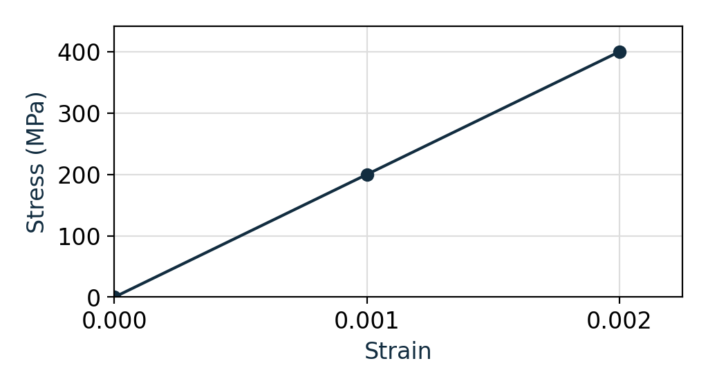
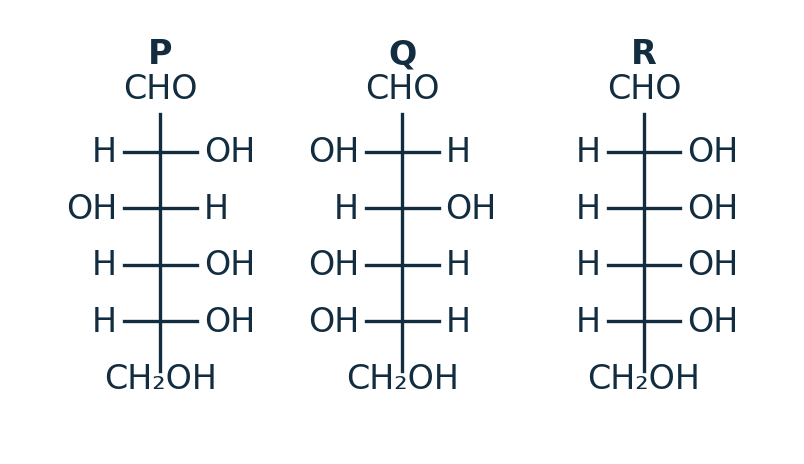
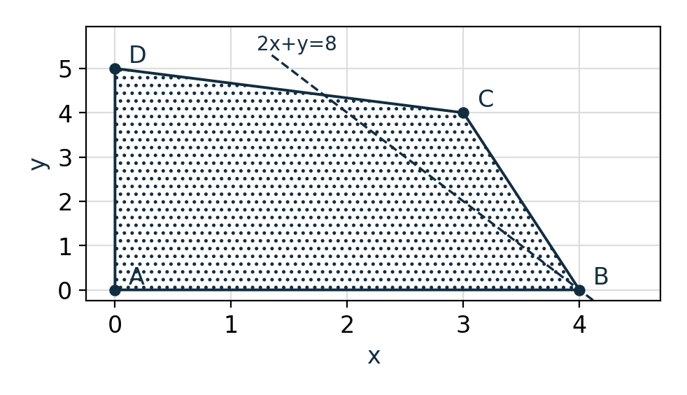
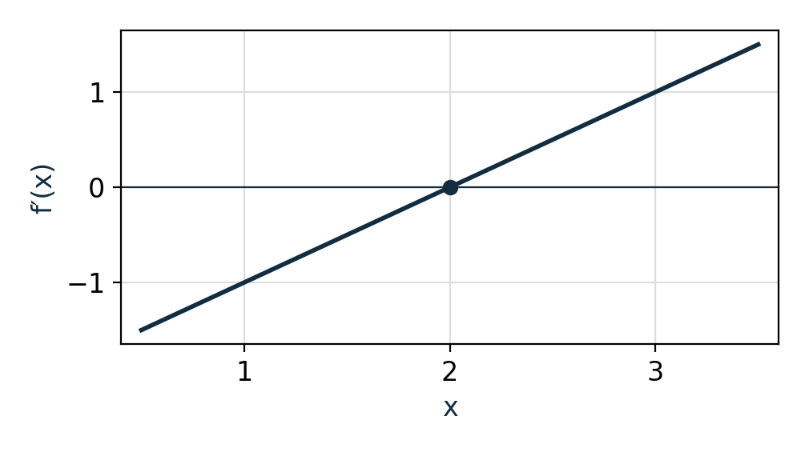

COMEDK UGET Test 11
180 minutes · 180 questions · +1 per correct answer · No negative marking
Physics
Q001. An ideal 12 V source supplies a 2 Ω resistor in series with a parallel pair of two 4 Ω resistors. How much energy does one of those 4 Ω resistors dissipate in 8 s?
A) 144 J
B) 288 J
C) 36 J
D) 72 J
Worked solution
Answer: (D) 72 J
Why and working: The parallel pair gives 2 Ω, so total current is 12/4=3 A. The pair has 6 V across it. One 4 Ω branch dissipates 6²/4=9 W, giving 72 J.
Why not the others: (A) this is the pair’s total energy. (B) uses the full source voltage across one branch. (C) introduces an extra halving.
Q002. Which unit measures the same physical quantity as a newton-second?
A) kg·m/s²
B) kg·m/s
C) kg·m²/s²
D) kg·m²/s
Worked solution
Answer: (B) kg·m/s
Why and working: A newton is kg·m/s². Multiplication by seconds gives kg·m/s, the unit of impulse and momentum.
Why not the others: (A) this is force. (C) this is energy. (D) this is angular momentum.
Q003. Why do the axial magnetic contributions from successive turns near the middle of an ordinary long solenoid reinforce one another?
A) Their currents circulate in the same sense around a common axis
B) Adjacent turns necessarily carry opposite winding currents
C) Each turn’s axial magnetic field alternates sign with distance from that turn
D) There is no field from an individual turn
Worked solution
Answer: (A) Their currents circulate in the same sense around a common axis
Why and working: The right-hand rule assigns the same axial direction for turns wound with the same sense. Symmetry cancels much of the transverse field.
Why not the others: (B) ordinary turns share circulation sense. (C) the on-axis field of a turn does not reverse across its centre. (D) each current loop contributes a field.
Q004. Compass needles used to map a bar magnet point along line tangents. A student marks crossing lines through one ordinary point in the air. What observational test invalidates the crossing?
A) One compass simultaneously aligns along both intersecting curves
B) The local field can point in any direction at every ordinary point
C) A single compass at that location has one north-seeking direction, not two distinct tangent directions
D) The crossing shows that no current can produce a field
Worked solution
Answer: (C) A single compass at that location has one north-seeking direction, not two distinct tangent directions
Why and working: A nonzero local field defines one vector and hence one direction. A crossing with two distinct tangents would predict two directions for the same compass needle.
Why not the others: (A) the needle cannot have two distinct orientations at once. (B) the same nonzero vector has a definite direction. (D) the conclusion concerns the representation rather than current sources.
Q005. A conveyor moves east at 1 m/s. A package on it is pushed west at 0.6 m/s relative to the conveyor for 10 s. What is its displacement relative to the floor?
A) 4 m east
B) 6 m west
C) 16 m east
D) 10 m east
Worked solution
Answer: (A) 4 m east
Why and working: With east positive, the package ground velocity is 1−0.6=0.4 m/s. Multiply by ten seconds.
Why not the others: (B) this is the belt-frame displacement. (C) adds oppositely signed speeds. (D) ignores the package motion relative to the belt.
Q006. Which inductor experiences the larger self-induced emf magnitude: 2 H with dI/dt=−3 A/s or 3 H with dI/dt=+2 A/s?
A) The 2 H coil has twice the magnitude
B) Their magnitudes are equal but signs opposite
C) The 3 H coil has three halves of the magnitude
D) Both emfs have the same sign because both inductances are positive
Worked solution
Answer: (B) Their magnitudes are equal but signs opposite
Why and working: The signed induced emf is −L dI/dt. These products give +6 and −6 V.
Why not the others: (A) the products have equal magnitude. (C) inductance alone does not fix voltage. (D) the slopes have opposite signs.
Q007. One of two series LCR circuits resonates at a higher frequency. Their inductances are equal. What follows about the capacitance of the higher-frequency circuit?
A) It is larger
B) It is smaller
C) It must be equal because inductance is equal
D) Its value cannot affect resonance
Worked solution
Answer: (B) It is smaller
Why and working: The common inductance leaves ω proportional to 1/√C. Increasing frequency requires decreasing C.
Why not the others: (A) larger C lowers resonance frequency. (C) both factors set the resonant frequency. (D) capacitance enters the cancellation condition.
Q008. A runner finishes one complete lap of a circular track and is back at the starting point. Which comparison holds between average speed and the magnitude of average velocity?
A) Both are zero
B) Average speed is positive and average velocity has magnitude zero
C) Both equal the instantaneous speed at the finish
D) Average velocity has greater magnitude than average speed
Worked solution
Answer: (B) Average speed is positive and average velocity has magnitude zero
Why and working: Distance travelled is the nonzero circumference, while net displacement is zero. Dividing each by elapsed time gives the comparison.
Why not the others: (A) distance is positive. (C) endpoint velocity is not either full-lap average. (D) a path length always bounds displacement magnitude.
Q009. A spherical surface separates glass of index 1.50 on the incident side from glass of index 1.25 on the transmitted side. Its signed radius is +10 cm. A real object is at u=−20 cm. Where is the paraxial image?
A) 12.5 cm on the incident side
B) 12.5 cm on the transmitted side
C) 25 cm on the incident side
D) 25 cm on the transmitted side
Worked solution
Answer: (A) 12.5 cm on the incident side
Why and working: The surface equation gives 1.25/v−1.50/(−20)=(1.25−1.50)/10=−0.025. Thus 1.25/v=−0.100 and v=−12.5 cm, on the incident side.
Why not the others: (B) the solved image distance is negative. (C) this uses the object term incorrectly. (D) both its sign and magnitude disagree.
Q010. In YDSE, slit spacing and screen distance both double at fixed wavelength. What happens to the fringe width?
A) It doubles
B) It halves
C) It is unchanged
D) It quadruples
Worked solution
Answer: (C) It is unchanged
Why and working: The width is β=λD/d. The two geometric changes cancel in D/d.
Why not the others: (A) includes only the screen-distance factor. (B) includes only the slit-spacing factor. (D) multiplies both factors instead of dividing.
Q011. A book rests on a horizontal table in an accelerating train. If friction between book and table is negligible, how will it appear to move from the train immediately after the train starts forward?
A) Backwards relative to the train
B) Forwards faster than the train
C) It remains fixed to the same position on the table
D) It moves upward out of the table
Worked solution
Answer: (A) Backwards relative to the train
Why and working: With no horizontal force on the book, it initially keeps its ground-frame velocity. The accelerating train moves ahead relative to it.
Why not the others: (B) there is no horizontal acceleration of the book in the ground frame. (C) the table slips forward under the book. (D) vertical forces remain balanced.
Q012. Electrons X and Y have equal mass. X has twice the nonrelativistic kinetic energy of Y. What is λ_X/λ_Y?
A) 1/2
B) 1/√2
C) √2
D) 2
Worked solution
Answer: (B) 1/√2
Why and working: Momentum is √(2mK). The wavelength h/p is inversely proportional to √K at fixed mass.
Why not the others: (A) uses inverse linear energy scaling. (C) reverses the ratio. (D) combines the wrong direction and exponent.
Q013. Two hydrogen emission series end at n=1 and n=2. For the same initial n>2, which produces the photon with larger energy?
A) The transition ending at n=2
B) Both are the same
C) The transition ending at n=1
D) Neither is possible unless n starts below 2
Worked solution
Answer: (C) The transition ending at n=1
Why and working: Energy increases with n in hydrogen, so the drop from a common upper level is larger when the final state is lower.
Why not the others: (A) n=2 is the higher endpoint. (B) the lower energies are distinct. (D) both are allowed downward level changes in this elementary comparison.
Q014. A force along x rises from zero at x=0 to 8 N at x=4 m in a straight line. How much work does it do between x=2 m and x=4 m?
A) 12 J
B) 16 J
C) 8 J
D) 4 J
Worked solution
Answer: (A) 12 J
Why and working: The force at x=2 is 4 N. Over the final 2 m the trapezoid area is ½(4+8)×2=12 J.
Why not the others: (B) this counts work over all four metres. (C) uses only the smaller force for two metres. (D) does not use the distance and average force correctly.
Q015. A fission reaction splits one heavy nucleus into two main fragments. Which change distinguishes it from fusion?
A) The total electron charge must become zero
B) Nucleons are destroyed instead of rearranged
C) Fusion always requires no initial approach of the nuclei
D) The number of main nuclei increases instead of decreasing
Worked solution
Answer: (D) The number of main nuclei increases instead of decreasing
Why and working: Fission divides a nucleus, while fusion combines light nuclei. Initial and final nucleon inventories are conserved in an ordinary nuclear reaction.
Why not the others: (A) electric charge obeys its own conservation law. (B) nucleons are conserved overall. (C) fusion requires bringing nuclei close together.
Q016. Below reverse breakdown, why does raising reverse voltage modestly often change a diode’s reverse current very little?
A) The junction resistance is always exactly constant
B) No electric field ever exists in the depletion region
C) Majority carriers are injected across the junction as in forward bias
D) It is limited mainly by the supply of thermally generated minority carriers
Worked solution
Answer: (D) It is limited mainly by the supply of thermally generated minority carriers
Why and working: In moderate reverse bias minority carriers are swept away once present. Increasing the field need not greatly change their generation rate.
Why not the others: (A) an idealised nearly flat I–V curve is not constant resistance. (B) reverse bias strengthens the junction field. (C) reverse bias suppresses majority injection.
Q017. Two carts of masses 1 kg and 3 kg have velocity components (8,0) and (0,4) m/s respectively. What is the velocity of their centre of mass?
A) (4,2) m/s
B) (8,12) m/s
C) (2,3) m/s
D) (2,1) m/s
Worked solution
Answer: (C) (2,3) m/s
Why and working: Total momentum is (8,12) kg·m/s. Divide each component by total mass four to get (2,3).
Why not the others: (A) averages velocities without mass weighting. (B) reports total momentum. (D) fails to multiply y velocity by its mass.
Q018. A test magnetic dipole is at an equatorial point of a bar magnet, where the bar’s local field is southward. The test dipole moment points east. From above, east is right and north is up. In which sense does it initially rotate toward the local field?
A) Anticlockwise
B) Clockwise
C) It stays at a stable equilibrium
D) It rotates toward north because the point is equatorial
Worked solution
Answer: (B) Clockwise
Why and working: The moment moves toward alignment with the southward local field. From rightward to downward on the stated view is clockwise.
Why not the others: (A) would initially turn toward north. (C) the initial moment is perpendicular, with nonzero torque. (D) the stated local field determines the alignment.
Q019. A charged insulator is placed near a neutral metal. Which mobile charges in the metal mainly redistribute?
A) Positive lattice nuclei freely traversing the metal
B) Conduction electrons
C) Electrons that must come through air from the insulator
D) Every nucleon of the metal atoms
Worked solution
Answer: (B) Conduction electrons
Why and working: Metals allow their conduction electrons to redistribute within the sample. No charge has to cross the air gap.
Why not the others: (A) nuclei remain in lattice sites. (C) electrostatic induction can occur without direct transfer. (D) nuclei are not the mobile carriers.
Q020. A planet sweeps the same orbital area in two equal times. One arc is near perihelion and the other near aphelion. Which arc generally covers more distance?
A) The one near aphelion
B) They must have exactly equal arc lengths
C) The comparison is impossible even near the two apsides
D) The one near perihelion
Worked solution
Answer: (D) The one near perihelion
Why and working: Kepler’s area law fixes the area rate. Near an apsis the velocity is transverse, so r times speed is fixed at the two apsides. Smaller r corresponds to greater speed and a longer short arc.
Why not the others: (A) larger r corresponds to lower speed. (B) equal time does not imply equal speed. (C) the area rule fixes the local speed comparison.
Q021. By how much does conductivity change if resistivity falls from ρ to 0.80ρ at fixed material state otherwise?
A) It falls by 20%
B) It rises by 20%
C) It rises by 80%
D) It rises by 25%
Worked solution
Answer: (D) It rises by 25%
Why and working: Conductivity is the reciprocal of resistivity. Its new factor is 1/0.80=1.25.
Why not the others: (A) conductivity changes in the opposite sense. (B) the reciprocal changes by a different percentage. (C) 0.80 is the resistivity factor.
Q022. A positive ion and a negative ion of the same speed enter perpendicular to a uniform magnetic field with the same initial direction. How do their initial force directions compare?
A) They are identical
B) Both forces are along the field
C) They are opposite
D) Both vanish because the velocities match
Worked solution
Answer: (C) They are opposite
Why and working: The vector v×B is common but multiplication by opposite charge signs reverses it.
Why not the others: (A) opposite q reverses the direction. (B) the force is perpendicular to B. (D) the perpendicular speed gives a nonzero cross product.
Q023. The plotted tension stress–strain graph has two marked points on an initial straight segment. What Young modulus follows from the graph?

A) 100 GPa
B) 20 GPa
C) 400 GPa
D) 200 GPa
Worked solution
Answer: (D) 200 GPa
Why and working: Read strain 0.001 at stress 200 MPa, or strain 0.002 at 400 MPa. Stress divided by dimensionless strain is 200,000 MPa=200 GPa.
Why not the others: (A) uses twice the first strain with the first stress. (B) misses a decimal factor. (C) uses the second stress with the first strain.
Q024. A small sample is weakly repelled from either pole of a strong magnet. What does this suggest about its induced moment in the elementary classification?
A) It must have a permanent north pole that stays toward either pole
B) It is diamagnetic and its induced moment opposes the local applied field
C) It is necessarily a ferromagnet because it responds at all
D) It is paramagnetic because the induced moment is parallel to the field
Worked solution
Answer: (B) It is diamagnetic and its induced moment opposes the local applied field
Why and working: Repulsion from stronger field regions for either pole fits an induced moment against the field. That is diamagnetic response.
Why not the others: (A) one fixed pole would not repel both poles under the same geometry. (C) ferromagnetic materials are generally attracted. (D) a parallel induced moment tends toward stronger field.
Q025. For fixed coils, I_primary rises linearly then becomes constant. How does the steady ideal secondary emf behave across those two stages?
A) It is zero during the ramp and grows during the plateau
B) It is proportional to primary current itself at every moment
C) It is nonzero during the ramp and zero on the plateau
D) It remains the same nonzero value after the ramp stops
Worked solution
Answer: (C) It is nonzero during the ramp and zero on the plateau
Why and working: Mutual emf is proportional to the primary current derivative. The derivative is constant nonzero on the ramp and zero on the plateau.
Why not the others: (A) interchanges the derivative conditions. (B) the linkage may be proportional to current, but emf is its derivative. (D) no induction persists at constant linkage.
Q026. Two identical open columns hold liquids of densities ρ and 2ρ. Depth h in the lighter liquid and depth h/4 in the denser one are compared. What is the ratio of gauge pressures, lighter to denser, if gravity is the same?
A) 1/2
B) 4
C) 1
D) 2
Worked solution
Answer: (D) 2
Why and working: Gauge pressure is ρgh. The denominator is 2ρg(h/4)=ρgh/2, so the ratio is two.
Why not the others: (A) reverses the comparison. (B) uses only depth. (C) the density difference offsets only half the depth factor.
Q027. Two AC loads take equal rms currents from the same rms voltage. Load X has phase difference 0° and load Y has 90°. How do their average powers and wattless currents compare?
A) Both use VI of real power because the rms currents agree
B) Y has no current because its real power is zero
C) X is wholly wattless and Y wholly in phase
D) X uses all VI as real power; Y uses zero real power and all its current is wattless
Worked solution
Answer: (D) X uses all VI as real power; Y uses zero real power and all its current is wattless
Why and working: Real power is VI cosφ and quadrature current is I sinφ. At 0° they are VI and zero, whereas at 90° they are zero and I.
Why not the others: (A) power depends on phase as well as rms values. (B) a reactive current can be nonzero. (C) the components are reversed.
Q028. For a thin lens in air, which substitution removes the curvature contribution of just its second surface in the lens-maker formula?
A) Set its radius to zero
B) Use a plane second surface of infinite radius
C) Make its radius equal to the first radius in magnitude regardless of sign
D) Double the index of the glass
Worked solution
Answer: (B) Use a plane second surface of infinite radius
Why and working: A plane face has zero curvature, represented by reciprocal radius zero. The other face’s term remains.
Why not the others: (A) zero radius would not give a zero reciprocal. (C) an equal radius magnitude still gives nonzero curvature. (D) the index factor multiplies both curvature terms.
Q029. When a hot sample cools and a colder one in contact warms, what determines the sign of heat flow between them?
A) Which sample has greater total mass, regardless of temperature
B) Which sample was made earlier
C) Their temperature difference
D) Whether the temperature scale is expressed in Celsius or Kelvin
Worked solution
Answer: (C) Their temperature difference
Why and working: Spontaneous heat transfer is from higher to lower temperature without other driving effects. Celsius and Kelvin preserve the ordering.
Why not the others: (A) mass alone does not establish direction. (B) age does not set a thermal gradient. (D) adding a common temperature offset does not invert order.
Q030. A single-slit diffraction pattern is recorded at fixed screen distance. The wavelength is increased while slit width is adjusted so the central maximum width remains approximately unchanged. How was the slit adjusted?
A) It was narrowed
B) It stayed the same
C) It was widened
D) It was closed completely
Worked solution
Answer: (C) It was widened
Why and working: The first-minimum angles are set by the wavelength-to-width ratio. Increasing the wavelength while holding the spread fixed requires increasing the width.
Why not the others: (A) narrowing and increasing wavelength would both broaden the central region. (B) the wavelength change would alter the width. (D) a closed slit would not make the stated comparison.
Q031. A full-wave rectifier is driven by a 50 Hz sinusoid. At what rate do positive output peaks repeat?
A) 50 per second
B) 25 per second
C) 200 per second
D) 100 per second
Worked solution
Answer: (D) 100 per second
Why and working: Both half cycles contribute a positive lobe, so each input period supplies two peaks.
Why not the others: (A) this fits one surviving half-cycle. (B) the pulse repetition does not halve. (C) there are two rather than four peaks per input cycle.
Q032. A metal block and a wooden block have sat together long enough in an insulated enclosure to reach equilibrium. Why might touching the metal feel cooler even at the same temperature?
A) Metal can conduct heat from the hand faster
B) The metal must be colder by the zeroth law
C) Wood and metal cannot reach thermal equilibrium with each other
D) The thermometer must display different values for materials at equal temperature
Worked solution
Answer: (A) Metal can conduct heat from the hand faster
Why and working: Thermal equilibrium fixes temperature, not the transient rate of heat transfer to a new contact. Higher metal conductivity can cool the contacting skin faster.
Why not the others: (B) the premise gives equal temperature. (C) different materials can equilibrate. (D) a thermometer indicates its equilibrium temperature.
Q033. Two concentric closed spherical surfaces enclose charge +Q at their common centre. Between the surfaces there is an additional charge −Q. What are the two total fluxes, inner then outer?
A) Q/ε₀, −Q/ε₀
B) Zero, Q/ε₀
C) Zero for both
D) Q/ε₀, zero
Worked solution
Answer: (D) Q/ε₀, zero
Why and working: The inner encloses +Q alone. The outer encloses both charges with zero signed sum. Gauss’s law applies even if the off-centre charge distorts the local field.
Why not the others: (A) the outer includes both charges. (B) the outer rather than inner has zero enclosed net charge. (C) the centre charge is inside the inner surface.
Q034. A dielectric is inserted halfway into an ideal parallel-plate capacitor while the battery remains connected. Ignore edge effects. In the filled area and in the adjacent air area, how do the field and free surface charge densities compare at the plates?
A) Fields equal; free charge density is greater over the dielectric
B) Field lower in the dielectric; free charge densities equal
C) Field greater in the dielectric; free charge density lower there
D) Both field and free charge density are equal in the two areas
Worked solution
Answer: (A) Fields equal; free charge density is greater over the dielectric
Why and working: The regions sit side by side at the same plate voltage and spacing, giving equal fields. The normal electric displacement equals κ ε₀E in the dielectric, giving greater free plate charge density there.
Why not the others: (B) side-by-side regions have the same potential difference. (C) the dielectric raises capacitance per area, not field at fixed voltage. (D) permittivity differs even though E agrees.
Q035. An ideal gas is compressed slowly at constant temperature from volume V to V/2. Which pair gives the final pressure relative to p and the sign of work done by the gas?
A) p/2 and positive
B) 2p and positive
C) p and zero
D) 2p and negative
Worked solution
Answer: (D) 2p and negative
Why and working: From pV constant, the pressure doubles. Work by the gas is ∫p dV, negative as dV<0 throughout compression.
Why not the others: (A) reverses both dependencies. (B) positive work by the gas occurs on expansion. (C) constant temperature need not imply either condition.
Q036. A cell of internal resistance r supplies current I. Which expression gives the magnitude of its internal voltage drop?
A) Ir
B) I/r
C) r/I
D) I²r
Worked solution
Answer: (A) Ir
Why and working: Ohm’s law for the cell’s internal series resistance gives drop Ir.
Why not the others: (B) has the wrong dimensions. (C) also has the wrong dimensions. (D) this is rate of internal energy dissipation.
Q037. A straight wire goes from west to east and carries current east. A uniform field lies north. Which way does the magnetic force point?
A) Downward
B) East
C) North
D) Upward
Worked solution
Answer: (D) Upward
Why and working: For east, north, up as a right-handed triad, the current-length vector crossed with B gives upward force.
Why not the others: (A) reverses the order of the cross product. (B) force is perpendicular to the current. (C) force is perpendicular to the field.
Q038. A pendulum is observed at one turning point and again at the opposite turning point 0.35 s later. What is its period?
A) 0.35 s
B) 0.70 s
C) 1.40 s
D) 0.175 s
Worked solution
Answer: (B) 0.70 s
Why and working: Opposite turning points are half a cycle apart. The full period is twice the measured interval.
Why not the others: (A) counts the half cycle as a full cycle. (C) multiplies the half period by four. (D) halves the already half-cycle duration.
Q039. A ferromagnetic sample is heated just above its Curie temperature and the external field is switched off. What distinction should a student make between alignment and individual magnetic moments?
A) Loss of collective spontaneous alignment does not require all microscopic moments to disappear
B) All microscopic moments necessarily vanish forever
C) Collective alignment becomes perfect in every domain
D) The sample must acquire a net electric charge
Worked solution
Answer: (A) Loss of collective spontaneous alignment does not require all microscopic moments to disappear
Why and working: Thermal disorder can destroy long-range alignment while microscopic moments remain and can respond to another applied field.
Why not the others: (B) local moments and ordering are distinct. (C) heating above the transition disrupts order. (D) the change is magnetic.
Q040. An AC generator's coil rotates such that its flux linkage is maximum at t=0. When does the emf first attain its peak magnitude in terms of period T?
A) T/2
B) T
C) T/4
D) Zero
Worked solution
Answer: (C) T/4
Why and working: From cosine flux linkage the emf is proportional to sine. Its first extreme is one quarter cycle after the flux maximum.
Why not the others: (A) the flux is then at its negative maximum and slope zero. (B) the linkage has returned to its initial maximum. (D) the initial slope is zero.
Q041. A tuning fork sends sound through air while vibrating up and down. Why is the sound in air described as longitudinal?
A) The fork's vertical movement forces all air elements to move perpendicular to every ray
B) Compression makes a wave electromagnetic
C) Air elements compress along the local propagation direction, even if the source motion has another direction
D) Every nearby air element travels one full wavelength with each crest
Worked solution
Answer: (C) Air elements compress along the local propagation direction, even if the source motion has another direction
Why and working: The wave in air passes alternating compressions and rarefactions. The medium motion is along the propagation direction of those disturbances.
Why not the others: (A) source movement does not set the direction of every air displacement. (B) sound in air is mechanical. (D) air elements primarily oscillate locally.
Q042. A converging thin lens images a real vertical object with nonzero negative magnification. When a second lens with greater positive power than the first is substituted at the same object distance, how does the magnitude of the real image magnification change?
A) It increases
B) It is unchanged
C) The image necessarily becomes upright and virtual
D) It decreases
Worked solution
Answer: (D) It decreases
Why and working: At constant object distance u in magnitude, the real image distance v satisfies 1/v=1/f−1/u. Greater power raises 1/f and reduces v. Thus v/u decreases while the real image stays inverted.
Why not the others: (A) v falls as positive power rises. (B) the image distance changes. (C) the object remains beyond the now-shorter focal length.
Q043. Two parallel long charged filaments have the same sign of density. At a point between them, the distances to X and Y are r and 3r respectively. If the net electric field there vanishes, what is λ_Y/λ_X?
A) 1/3
B) 3
C) 9
D) 1
Worked solution
Answer: (B) 3
Why and working: The fields oppose between equally signed line sources. Their magnitudes scale as λ/r, so λ_X/r=λ_Y/(3r), giving ratio three.
Why not the others: (A) reverses the distances. (C) uses the inverse-square point-charge law. (D) different distances require different line densities.
Q044. Which product of derived factors has the same SI base dimensions as pressure: energy divided by volume, power divided by area, force divided by length, or momentum divided by time?
A) Energy divided by volume
B) Power divided by area
C) Force divided by length
D) Momentum divided by time
Worked solution
Answer: (A) Energy divided by volume
Why and working: Energy per volume is kg m² s⁻²/m³=kg m⁻¹ s⁻², the dimensions of force per area.
Why not the others: (B) adds an inverse time and leaves no inverse length. (C) only divides force by one length. (D) this gives force itself.
Q045. Two equal capacitances C placed in parallel are equivalent to which single capacitance?
A) 2C
B) C/2
C) C
D) Zero
Worked solution
Answer: (A) 2C
Why and working: At a common voltage their charges add, giving Q_total=(C+C)V.
Why not the others: (B) this is the equal-series result. (C) both branches contribute. (D) positive capacitances add.
Q046. Two cells have emfs E and E, but internal resistances r and 3r. They are wired aiding in series with an external load R. What current magnitude follows?
A) E/(R+4r)
B) 2E/(R+2r)
C) 2E/(R+4r)
D) 2E/(R+r/4)
Worked solution
Answer: (C) 2E/(R+4r)
Why and working: The emfs add and the same current passes through both internal resistances. The total series resistance is R+r+3r.
Why not the others: (A) uses only one emf. (B) does not add the given unequal internal resistances. (D) uses an inapplicable parallel rule.
Q047. A distance–time graph for one runner is straight. For a second runner it has an increasing slope. Which comparison of their speeds is justified?
A) First is constant; second increases
B) First increases and second is constant
C) Both are constant whenever time is increasing
D) Second decreases because the trace bends
Worked solution
Answer: (A) First is constant; second increases
Why and working: Distance–time slope gives instantaneous speed. A straight trace has fixed slope, and a larger tangent slope means greater speed.
Why not the others: (B) interchanges the traces. (C) positive time does not imply constant slope. (D) the bending is expressly toward a larger slope.
Q048. Parallel long wires initially repel at fixed distance. Which current change makes them attract while halving the magnitude of the force per unit length?
A) Reverse both currents and halve one magnitude
B) Reverse one current and halve its magnitude, keeping the other fixed
C) Halve either current without reversing it
D) Reverse one current and double its magnitude
Worked solution
Answer: (B) Reverse one current and halve its magnitude, keeping the other fixed
Why and working: The force magnitude scales with the product of current magnitudes. Reversing a single current changes the relative sense, and halving that current halves the force.
Why not the others: (A) both reversals preserve the original relative sense. (C) both directions still give repulsion. (D) this instead doubles the force magnitude.
Q049. An ideal transformer secondary gives 30 V for 120 V at the primary at a certain turns ratio. The input is changed to 80 V rms at the same frequency. What secondary rms voltage follows?
A) 30 V
B) 20 V
C) 40 V
D) 60 V
Worked solution
Answer: (B) 20 V
Why and working: The same turns ratio fixes V_s/V_p=30/120=1/4. Multiplying 80 V by 1/4 gives 20 V.
Why not the others: (A) the input voltage was changed. (C) uses a ratio of one-half. (D) applies an unrelated voltage subtraction.
Q050. Position vectors at the start and end are (3,−2) m and (−1,−2) m. What displacement follows relative to these coordinate axes?
A) (−4,0) m
B) (2,−4) m
C) (4,0) m
D) (−1,−2) m
Worked solution
Answer: (A) (−4,0) m
Why and working: Subtract start from end: (−1−3,−2−(−2))=(−4,0).
Why not the others: (B) adds position vectors. (C) subtracts in reverse order. (D) reports final position rather than displacement.
Q051. Two contact lenses have focal lengths +20 cm and +30 cm in air. What is their effective focal length?
A) +50 cm
B) +25 cm
C) +12 cm
D) −12 cm
Worked solution
Answer: (C) +12 cm
Why and working: Add inverse focal lengths in consistent units: 1/20+1/30=1/12 per cm. The powers have the same positive sign.
Why not the others: (A) addition applies to powers not focal lengths. (B) the arithmetic mean is not the contact-lens rule. (D) both are converging.
Q052. Two parallel infinite sheets carry +σ and +3σ. What is the field magnitude in the region outside them on either side?
A) σ/ε₀
B) 2σ/ε₀
C) σ/(2ε₀)
D) Zero
Worked solution
Answer: (B) 2σ/ε₀
Why and working: Outside on a given side, the fields of both positive sheets point outward together. Add σ/(2ε₀) and 3σ/(2ε₀).
Why not the others: (A) this is the magnitude between the sheets. (C) uses only the weaker sheet. (D) outside contributions reinforce.
Q053. A 0.50 kg cart accelerates at −4 m/s². What is its net force along the same positive axis?
A) +2 N
B) −8 N
C) −0.125 N
D) −2 N
Worked solution
Answer: (D) −2 N
Why and working: Use F=ma=0.5×(−4)=−2 N.
Why not the others: (A) drops the direction sign. (B) divides rather than multiplies by 0.5. (C) inverts the acceleration scale.
Q054. A dielectric fills the gap of one of two geometrically identical parallel-plate capacitors and doubles its capacitance. If both have the same held voltage, which has the greater electric field between plates in the ideal uniform-gap model?
A) Neither, the macroscopic fields are equal
B) The filled one, by a factor of two
C) The air-filled one, by a factor of two
D) Both fields must vanish
Worked solution
Answer: (A) Neither, the macroscopic fields are equal
Why and working: The field is V/d for an ideal flat gap. Since the voltage and spacing agree, so do the fields, even though free plate charges differ.
Why not the others: (B) this is the capacitance ratio rather than field ratio. (C) equal voltage across equal spacing fixes the field. (D) both have an applied nonzero voltage.
Q055. Two resistors of 2 Ω and 4 Ω in series are across a 9 V ideal source. What potential drop across the 4 Ω resistor must appear in a loop equation?
A) 3 V
B) 9 V
C) 1.5 V
D) 6 V
Worked solution
Answer: (D) 6 V
Why and working: The series current is 9/(2+4)=1.5 A. The 4 Ω drop is 1.5×4=6 V; both drops sum to the emf.
Why not the others: (A) this is the 2 Ω drop. (B) this is the total drop. (C) this is the current value.
Q056. A block of mass m moving at speed v is brought to rest by a constant resisting force over 2 m. If its initial speed is doubled with the same force, what distance is required?
A) 4 m
B) 2 m
C) 8 m
D) 16 m
Worked solution
Answer: (C) 8 m
Why and working: At constant force the resisting work magnitude is proportional to distance. The initial kinetic energy is proportional to v², so doubling v quadruples stopping distance.
Why not the others: (A) uses linear rather than quadratic speed scaling. (B) ignores the greater initial energy. (D) applies the squared factor twice.
Q057. A current loop's magnetic moment is tilted until parallel to a uniform magnetic field. What torque acts at exactly that position?
A) Its maximum magnitude
B) Half its maximum magnitude
C) Zero
D) A torque directed along the field
Worked solution
Answer: (C) Zero
Why and working: The moment cross field vanishes for collinear vectors. The aligned position also minimises magnetic potential energy.
Why not the others: (A) maximum torque requires perpendicular directions. (B) any nonzero sine would require a tilt. (D) the torque is zero here.
Q058. At one prism face the incident ray is normal. A student concludes that a ray leaving the other face must also emerge normally. Which geometry contradicts the inference for nonzero apex angle?
A) The internal ray makes the apex angle with the second face normal
B) The two normals are always exactly parallel at any apex angle
C) The internal ray lies exactly in both prism faces
D) Normal entry means light changes into an electromagnetic standing wave
Worked solution
Answer: (A) The internal ray makes the apex angle with the second face normal
Why and working: Normal entry preserves the direction at the first face. The angle to the second inward or outward normal used in ray geometry then equals the apex angle, so the second incidence is generally nonzero.
Why not the others: (B) a wedge has different face orientations. (C) the ray is directed along the first normal. (D) transmission does not stop wave propagation.
Q059. A uniform rod extends from x=0 to x=8 cm. An attached point mass equal to the rod mass lies at x=0. Where is the combined centre of mass?
A) 4 cm
B) 6 cm
C) 2 cm
D) 8 cm
Worked solution
Answer: (C) 2 cm
Why and working: The rod acts at its midpoint 4 cm for centre-of-mass calculation. Equally weighting rod and added mass gives (4+0)/2=2 cm.
Why not the others: (A) omits the added mass. (B) would follow for a point mass at the other end. (D) the centre is between the two mass positions.
Q060. A conducting spherical shell with net charge +Q contains an empty cavity. An external point charge is brought nearby without contact. What are the electric field in the empty cavity and the total flux through a surface just outside the entire conductor?
A) Nonzero and zero
B) Zero and +Q/ε₀
C) Zero and zero
D) Nonzero and dependent on the external charge’s position
Worked solution
Answer: (B) Zero and +Q/ε₀
Why and working: The enclosed cavity has no internal charge and its conducting boundary is equipotential, so its interior field is zero in electrostatic equilibrium. The enclosing surface outside the conductor includes +Q and excludes the external charge.
Why not the others: (A) the empty shielded cavity has zero field. (C) the outer surface encloses net +Q. (D) external sources may change local surface fields but not enclosed charge.
Chemistry
Q061. Which concentration measure counts moles of solute per kilogram of solvent?
A) Molarity
B) Molality
C) Mole fraction
D) Mass percentage
Worked solution
Answer: (B) Molality
Why and working: Molality is amount of solute divided by solvent mass in kilograms. It uses solvent mass rather than solution volume.
Why not the others: (A) molarity uses solution volume. (C) mole fraction compares amounts. (D) mass percentage compares masses.
Q062. At the same cation charge and size, which anion usually leads to more covalent character in its salt, F⁻ or I⁻?
A) F⁻, because its electron cloud is larger
B) Both always give the same character because charge is the same
C) I⁻, because it loses its nucleus
D) I⁻, because its electron cloud is more easily polarised
Worked solution
Answer: (D) I⁻, because its electron cloud is more easily polarised
Why and working: Larger iodide has a more diffuse outer shell. Cation-induced distortion enhances sharing of density.
Why not the others: (A) fluoride is smaller. (B) polarisability also depends on size. (C) the nucleus remains present.
Q063. Reduction potentials for P²⁺/P and Q²⁺/Q are +0.26 and −0.14 V. What spontaneous cell emf follows when they are paired under standard conditions?
A) −0.40 V
B) +0.12 V
C) +0.40 V
D) +0.52 V
Worked solution
Answer: (C) +0.40 V
Why and working: P²⁺ is reduced at the cathode. The standard voltage is 0.26−(−0.14)=0.40 V.
Why not the others: (A) would fit the opposite reaction direction. (B) adds the signed reduction potentials. (D) potential is not multiplied by electron count.
Q064. For 2A→B, [A] falls from 0.70 to 0.54 mol/L over 4 s. What is the average reaction rate defined with stoichiometric normalisation?
A) 0.040 mol L⁻¹ s⁻¹
B) 0.080 mol L⁻¹ s⁻¹
C) 0.020 mol L⁻¹ s⁻¹
D) 0.16 mol L⁻¹ s⁻¹
Worked solution
Answer: (C) 0.020 mol L⁻¹ s⁻¹
Why and working: A disappears at 0.16/4=0.040 mol L⁻¹ s⁻¹. Divide by its coefficient two to get the reaction rate.
Why not the others: (A) is the disappearance rate of A before normalising. (B) multiplies by the coefficient instead of dividing. (D) reports the concentration difference.
Q065. A closed system at constant pressure releases 90 J of heat and receives 30 J of pressure–volume work. No other work is present. What are ΔU and ΔH respectively?
A) −60 J and −90 J
B) −120 J and −90 J
C) −60 J and +90 J
D) +60 J and −30 J
Worked solution
Answer: (A) −60 J and −90 J
Why and working: In the chemistry convention ΔU=q+w=−90+30=−60 J. Since heat is at constant pressure with only pV work, ΔH=q_p=−90 J.
Why not the others: (B) assigns the wrong sign to work done on the system. (C) heat leaves the system. (D) both reported signs or magnitudes fail the stated balances.
Q066. Fe³⁺ has the ground-state configuration [Ar]3d⁵. How many unpaired electrons does the free ion have under Hund’s rule?
A) Three
B) One
C) Zero
D) Five
Worked solution
Answer: (D) Five
Why and working: The five equivalent d orbitals each receive one electron with parallel spins before pairing occurs.
Why not the others: (A) requires pairing before using all orbitals. (B) fits a different filling arrangement. (C) a half-filled free d shell has unpaired electrons.
Q067. An octahedral complex initially has six monodentate ligands. Two neutral monodentates are each replaced by one end of the same new neutral bidentate ligand, with every other site unchanged. What happens to the coordination number and ligand-entity count?
A) Coordination number stays six; the ligand count drops from six to five
B) Coordination number drops to five; the ligand count stays six
C) Both counts fall to five
D) Both counts stay six
Worked solution
Answer: (A) Coordination number stays six; the ligand count drops from six to five
Why and working: Two donor sites are vacated and then refilled by the two donor atoms of one chelate. Six sites remain occupied by one fewer ligand entity.
Why not the others: (B) coordination number counts the refilled donor sites. (C) two donor atoms replace two donor atoms. (D) one molecule replaces two.
Q068. A weak monoprotic acid of concentration 0.10 M is 1% ionised. In the usual dilute approximation, what concentration of undissociated acid remains?
A) 0.099 M
B) 0.001 M
C) 0.10 M exactly
D) 0.010 M
Worked solution
Answer: (A) 0.099 M
Why and working: Ionised concentration is 0.01×0.10=0.001 M. Subtract that amount from the initial acid concentration to obtain the undissociated portion.
Why not the others: (B) this is the ionised acid amount. (C) ignores the measured ionisation. (D) uses ten times the dissociated amount.
Q069. Which compound is 2-bromo-2-methylpropane, and what class of carbon bears bromine in it?
A) CH₃CHBrCH₂CH₃, primary
B) (CH₃)₂CHCH₂Br, tertiary
C) (CH₃)₃CBr, tertiary
D) CH₃CH₂CH₂CH₂Br, secondary
Worked solution
Answer: (C) (CH₃)₃CBr, tertiary
Why and working: The longest chain through the named C2 is propane with an additional methyl at C2. The Br-bearing carbon has three carbon neighbours.
Why not the others: (A) the structure is 2-bromobutane and that site is secondary. (B) that compound is 1-bromo-2-methylpropane with a primary brominated carbon. (D) this is an unbranched primary bromide.
Q070. A molecule has four carbon atoms in one continuous chain with terminal CH₂OH and no multiple bond. What is its systematic name?
A) Butan-2-ol
B) Butanal
C) Propan-1-ol
D) Butan-1-ol
Worked solution
Answer: (D) Butan-1-ol
Why and working: The alkane parent has four carbons, and OH is on carbon one. The alcohol suffix is ol.
Why not the others: (A) this has an internal OH position. (B) an aldehyde has CHO rather than CH₂OH. (C) there are four carbon atoms.
Q071. In I₂+2S₂O₃²⁻→2I⁻+S₄O₆²⁻, what change identifies the substance acting as the oxidant?
A) I₂ gains electrons, forming I⁻
B) I⁻ loses electrons as the starting reagent
C) Thiosulfate gains iodine atoms and becomes the oxidant
D) Tetrathionate gives electrons to I₂ even though it is initially absent
Worked solution
Answer: (A) I₂ gains electrons, forming I⁻
Why and working: An oxidant accepts electrons. Elemental iodine starts at oxidation state zero and reaches −1 per iodine in iodide.
Why not the others: (B) iodide is formed, not supplied as initial oxidant. (C) thiosulfate acts as the reducing agent. (D) tetrathionate is a product.
Q072. What is the systematic name of CH₃COCH₂CH₂CH₃?
A) Pentan-3-one
B) Pentanal
C) Butan-2-one
D) Pentan-2-one
Worked solution
Answer: (D) Pentan-2-one
Why and working: The longest chain has five carbon atoms, including the carbonyl carbon. Number from the end nearest the ketone to place it at C2.
Why not the others: (A) carbonyl is at the second rather than middle carbon. (B) an aldehyde would be terminal. (C) the chain has five carbons.
Q073. Two neutral amines have the same total number of carbon atoms. One is N,N-dimethylmethanamine. Which class does its name specify regardless of the other molecule?
A) Primary, because there is only one carbon in the parent name
B) Tertiary, because nitrogen has three methyl groups
C) Secondary, because only the two N-locants count
D) Quaternary, because methyl groups create an extra charge
Worked solution
Answer: (B) Tertiary, because nitrogen has three methyl groups
Why and working: The parent methanamine supplies one CH₃ attached to N. The two N-methyl substituents add two more, for a neutral tertiary amine.
Why not the others: (A) the two N substituents also count. (C) must count the parent CH₃ as well. (D) quaternary ammonium would have four organic groups on N.
Q074. Which name correctly describes CH₃CH(OH)CH₂CH₃ as an alcohol?
A) 2-hydroxybutanal
B) Propan-2-ol
C) Butan-2-ol
D) Butan-1-ol
Worked solution
Answer: (C) Butan-2-ol
Why and working: The main chain has four carbons and the OH group receives locant two. It is the principal functional group and uses the suffix ol.
Why not the others: (A) there is no aldehyde group. (B) the parent contains four carbons. (D) the OH is not terminal.
Q075. A six-carbon monosaccharide has an internal ketone in its open-chain form. How is it classified?
A) Aldohexose
B) Ketopentose
C) Ketohexose
D) Aldopentose
Worked solution
Answer: (C) Ketohexose
Why and working: The internal carbonyl is a ketone. Six carbons give the hexose classification, combining to ketohexose.
Why not the others: (A) an aldose has an aldehyde in its open chain. (B) a pentose has five carbons. (D) both functional and count labels are wrong.
Q076. At constant temperature a gas has Henry constant K and partial pressure p over a dilute solution. The gas is replaced by another whose Henry constant is twice as large with the same p. How does the equilibrium mole fraction compare?
A) It is one half of the original
B) It doubles
C) It stays equal
D) It is one quarter of the original
Worked solution
Answer: (A) It is one half of the original
Why and working: In the convention p=K_Hx, x=p/K_H. Doubling K_H at fixed pressure halves x.
Why not the others: (B) uses direct dependence on K_H. (C) the gas identity changes the constant. (D) the rule is inverse linear.
Q077. At which step of the usual radical chlorination mechanism are two radical species removed and no new radical produced?
A) Cl₂ absorbs light and splits into atoms
B) Two organic radicals combine
C) A Cl radical removes H from the substrate
D) An alkyl radical takes Cl from Cl₂ and generates another Cl radical
Worked solution
Answer: (B) Two organic radicals combine
Why and working: Recombination forms one closed-shell molecule from two radicals. This is a termination step.
Why not the others: (A) this creates radicals in initiation. (C) the H abstraction creates a new carbon radical. (D) one radical is regenerated.
Q078. For a two-electron reaction at 298 K, take E°=0.118 V and E=0.118−(0.059/2)log₁₀Q. At what Q does the cell voltage become zero?
A) 10²
B) 10⁻⁴
C) 4
D) 10⁴
Worked solution
Answer: (D) 10⁴
Why and working: At E=0, log₁₀Q=2×0.118/0.059=4. Exponentiating in base ten gives Q=10⁴.
Why not the others: (A) omits the factor two from n. (B) uses the wrong sign. (C) reports the logarithm rather than Q.
Q079. Which change usually reduces the initial rate when an elementary bimolecular step starts with both reactants available?
A) Lower the concentration of one reactant at the same temperature
B) Raise the collision energy by heating
C) Add an effective catalyst without removing reactant
D) Double the concentrations of both reactants
Worked solution
Answer: (A) Lower the concentration of one reactant at the same temperature
Why and working: Lowering one reactant concentration reduces the frequency of the relevant encounters, with other conditions fixed.
Why not the others: (B) heating generally increases the fraction of energetic collisions. (C) a catalyst offers a more effective pathway. (D) higher concentrations do not lower the encounter rate.
Q080. An 11 g sample of CO₂ contains how many moles of oxygen atoms? Use C=12 and O=16.
A) 0.25 mol
B) 1.00 mol
C) 0.50 mol
D) 2.00 mol
Worked solution
Answer: (C) 0.50 mol
Why and working: The amount of CO₂ is 11/44=0.25 mol. Each molecule contains two oxygen atoms, so their amount is 0.50 mol.
Why not the others: (A) counts molecules rather than oxygen atoms. (B) assumes twice the sample amount of CO₂. (D) two is the count per single molecule.
Q081. Why does the first ionisation enthalpy of neutral 3d transition elements not necessarily rise by a fixed amount at each step?
A) Nuclear charge decreases at every step
B) All their 3d and 4s electrons are absent
C) The atom loses a neutron instead of an electron during ionisation
D) Increasing nuclear charge is accompanied by changes in screening and electron configurations
Worked solution
Answer: (D) Increasing nuclear charge is accompanied by changes in screening and electron configurations
Why and working: Across the row, d occupancy and screening change along with Z. These effects can make the increments irregular.
Why not the others: (A) each next element has a higher Z. (B) the row has valence 3d and 4s occupations. (C) ionisation removes an electron.
Q082. A coordination complex has no unpaired electrons in its isolated-ion description. Which magnetic response fits?
A) Ferromagnetic solely because it contains a metal
B) Paramagnetic with one unpaired electron
C) Diamagnetic
D) It must attract a magnet strongly regardless of electron count
Worked solution
Answer: (C) Diamagnetic
Why and working: Paired electron spins cancel permanent spin magnetic moments in this elementary comparison. A closed-shell complex normally gives a weak diamagnetic response.
Why not the others: (A) metal content alone does not imply collective ordering. (B) the premise says no unpaired electrons. (D) strong attraction does not follow.
Q083. An electron configuration lists 4g¹. Why is that subshell label impossible?
A) A g subshell holds only even numbers of electrons
B) For n=4, l can be at most 3 but g requires l=4
C) The subscript four requires l=0
D) A g subshell is forbidden at every principal shell
Worked solution
Answer: (B) For n=4, l can be at most 3 but g requires l=4
Why and working: The allowed l values extend from zero through n−1. So g, with l=4, requires n≥5.
Why not the others: (A) the occupancy parity is not the problem. (C) a principal number does not select just the s subshell. (D) n≥5 allows the corresponding angular label.
Q084. A chiral alkyl bromide gives one inverted configuration at the reacting carbon under standard SN2 conditions. What explains that inversion?
A) A flat carbocation persists long enough to randomise all products
B) The nucleophile bonds to bromine and leaves carbon unchanged
C) The nucleophile approaches opposite the departing bond
D) The carbon loses all four bonds before the reactants collide
Worked solution
Answer: (C) The nucleophile approaches opposite the departing bond
Why and working: Backside attack forms the new bond as the original leaving group departs, producing an umbrella-like inversion at tetrahedral carbon.
Why not the others: (A) a planar intermediate describes a different limiting mechanism. (B) the substitution occurs at carbon. (D) bond changes are coupled rather than beginning with complete bond loss.
Q085. A primary alcohol undergoes mild oxidation, after which the product is distilled away before further oxidation. Which functional class is isolated?
A) Ketone
B) Aldehyde
C) Carboxylic acid necessarily
D) Ether
Worked solution
Answer: (B) Aldehyde
Why and working: A primary CH₂OH group can lose two hydrogens to make CHO. Removing the volatile aldehyde suppresses further conversion to acid.
Why not the others: (A) ketones commonly come from secondary alcohols. (C) stronger or prolonged oxidation is required for complete acid formation. (D) ether formation is not the stated oxidation.
Q086. A model molecule has three identical peripheral atoms around one centre. Each peripheral atom is more electronegative than the centre, and the three bond dipoles oppose symmetrically in one plane at 120°. What follows?
A) Every bond is nonpolar because the vector sum is zero
B) Its net bond dipole cancels even though each bond is polar
C) The net dipole equals three times one bond dipole
D) Each peripheral atom necessarily has an integral −1 formal charge
Worked solution
Answer: (B) Its net bond dipole cancels even though each bond is polar
Why and working: Three equal vectors separated by 120° have zero sum. Local bond polarity does not depend on vector cancellation of the whole molecule.
Why not the others: (A) individual bonds can be polar. (C) the dipoles are not parallel. (D) partial charge does not determine formal charge.
Q087. Which alcohol yields propanone when mildly oxidised without carbon–carbon bond cleavage?
A) Propan-1-ol
B) Propan-2-ol
C) Methanol
D) Ethanol
Worked solution
Answer: (B) Propan-2-ol
Why and working: The secondary OH-bearing carbon at C2 converts to a ketone carbonyl in the same position. Three carbon atoms give propanone.
Why not the others: (A) this initially gives propanal. (C) this gives a one-carbon oxidation product. (D) this gives a two-carbon aldehyde initially.
Q088. What does controlled reduction of propanenitrile produce while retaining the nitrile carbon in the final skeleton?
A) Ethanamine
B) Propan-2-amine
C) Propan-1-amine
D) Propanoic acid
Worked solution
Answer: (C) Propan-1-amine
Why and working: Nitrile reduction changes the C≡N part to terminal CH₂NH₂. The original nitrile carbon remains as the carbon attached to NH₂.
Why not the others: (A) would delete a carbon. (B) the nitrogen remains at a terminal site. (D) hydrolysis would give the corresponding acid.
Q089. Which arrangement directly gives a σ bond in the elementary valence bond picture using two p orbitals?
A) Side-on overlap above and below the internuclear axis
B) Two nodal planes positioned to give no overlap
C) Orbitals on distant atoms with no overlap
D) End-on overlap along the internuclear axis
Worked solution
Answer: (D) End-on overlap along the internuclear axis
Why and working: A σ bond has electron density along and around the internuclear axis. End-on overlap supplies that geometry.
Why not the others: (A) side-on overlap is the π pattern. (B) zero overlap does not create a bond in this model. (C) the covalent overlap is required.
Q090. The figure shows three Fischer projections with the same groups at their top and bottom. Which pair are enantiomers?

A) P and Q
B) P and R
C) Q and R
D) All three are the same structure
Worked solution
Answer: (A) P and Q
Why and working: P and Q reverse the left/right OH position at every stereocentre. R shares some, but not all, positions with each, so that comparison is not a complete mirror pair.
Why not the others: (B) R differs from P at only one centre. (C) R does not flip all centres relative to Q. (D) the intermediate OH orientations differ.
Q091. What distinguishes a substitutional solid solution from one in which very small solute atoms occupy gaps?
A) Solute atoms occupy normal host lattice sites rather than interstices
B) Its solvent is gaseous
C) It must consist of physically separate powders
D) The lattice contains no solute at all
Worked solution
Answer: (A) Solute atoms occupy normal host lattice sites rather than interstices
Why and working: Substitutional dissolution replaces some host atoms at lattice sites, whereas interstitial dissolution fills gaps without replacing the host.
Why not the others: (B) the resulting solution is solid. (C) separate powders need not form one solid phase. (D) occupation by solute defines the type.
Q092. Two identical amounts of water are heated in identical insulated vessels. One receives twice the heat of the other without phase change. What happens to the temperature rise?
A) It is half as large
B) It is twice as large in the more heated sample
C) It is identical because the masses are equal
D) It is four times larger
Worked solution
Answer: (B) It is twice as large in the more heated sample
Why and working: With equal thermal capacity C, ΔT=q/C. Twice the heat gives twice the change.
Why not the others: (A) reverses the relation. (C) equal capacity does not force equal ΔT with differing heat supplies. (D) the law is linear.
Q093. A reaction has ΔG°=−3F joules per mole as written and transfers two electrons. What standard emf follows, with F in C/mol?
A) −1.5 V
B) +3.0 V
C) +6.0 V
D) +1.5 V
Worked solution
Answer: (D) +1.5 V
Why and working: From ΔG°=−nFE°, E°=−(−3F)/(2F)=1.5 V.
Why not the others: (A) misses the negative relation sign. (B) omits the electron count divisor. (C) multiplies by the electron count.
Q094. An elementary bimolecular step has rate k[A][B]. If A and B are two different species and both initially double, what changes about the rate and the step’s molecularity?
A) Rate doubles; molecularity becomes four
B) Rate quadruples; molecularity remains two
C) Rate quadruples; molecularity becomes four
D) Rate is unchanged; both species still occur
Worked solution
Answer: (B) Rate quadruples; molecularity remains two
Why and working: The rate product has two independently doubled factors. Molecularity counts entities in an elementary event, which are still one A and one B.
Why not the others: (A) both rate factors double and the event count stays two. (C) bulk concentration does not change the count per event. (D) the rate product changes.
Q095. Why is the second ionisation of a diprotic acid commonly weaker than the first in water?
A) The second proton is lost from a more positively charged cation in every case
B) The second step releases an electron instead of a proton
C) The first ionisation removes the entire acid molecule from solution
D) The second proton is lost from an already negative ion, which tends to hold it more strongly
Worked solution
Answer: (D) The second proton is lost from an already negative ion, which tends to hold it more strongly
Why and working: After losing the first proton, H₂A becomes HA⁻. Its negative charge helps bind the next proton, and the product A²⁻ concentrates more charge.
Why not the others: (A) the first dissociation makes an anion. (B) both are proton-transfer equilibria. (C) an acid-derived ion remains.
Q096. For the same transition element, which radius is usually smaller under comparable coordination environments?
A) The ion at the higher positive oxidation state
B) The ion at the lower positive state by necessity
C) They must be equal because the proton numbers are equal
D) The ion with more electrons is always smaller
Worked solution
Answer: (A) The ion at the higher positive oxidation state
Why and working: On the same nucleus, greater positive charge corresponds to fewer electrons and greater effective attraction per remaining electron in the usual comparison.
Why not the others: (B) the trend goes the other way. (C) electronic populations matter. (D) additional electrons commonly add shielding or repulsion.
Q097. Which name fits [Co(NH₃)₅Cl]Cl₂?
A) Pentaamminechloridocobalt(I) chloride
B) Pentaamminechloridocobalt(III) chloride
C) Hexaamminecobalt(III) chloride
D) Pentaamminechloridocobaltate(III) chloride
Worked solution
Answer: (B) Pentaamminechloridocobalt(III) chloride
Why and working: The bracketed ion is +2 and contains one −1 chlorido ligand. Hence cobalt is +3. The coordination entity is cationic, so use cobalt rather than cobaltate.
Why not the others: (A) does not balance charge. (C) there are five NH₃ and one chlorido ligand. (D) the suffix ate denotes an anionic coordination entity.
Q098. In a halogen-substituted saturated carbon chain, why can a distant σ bond be weakly polarised even when no outside reagent is added?
A) Inductive polarisation can be transmitted through successive σ bonds
B) An electromeric effect must first transfer a complete π pair from that bond
C) Only breaking the chain can communicate any electronic effect
D) A distant bond must move all nuclei to a new isomer
Worked solution
Answer: (A) Inductive polarisation can be transmitted through successive σ bonds
Why and working: Electronegativity differences polarise σ bonds and the influence can propagate with decreasing strength along the chain. A multiple bond and an attacking reagent are not needed.
Why not the others: (B) the described chain need not contain π bonds. (C) polarisation needs no chain cleavage. (D) atomic connectivity is retained.
Q099. Two samples of the same optically active substance have the same concentration and temperature, but one uses twice the path length. What happens to the measured rotation in the linear regime?
A) Its magnitude doubles and its sign is unchanged
B) Its magnitude halves and its sign is unchanged
C) Its sign reverses
D) Its rotation becomes zero
Worked solution
Answer: (A) Its magnitude doubles and its sign is unchanged
Why and working: Observed rotation equals specific rotation times concentration times length. Holding the first two fixed makes the path dependence linear.
Why not the others: (B) reverses the scaling. (C) path length does not change handedness. (D) finite nonzero rotation remains.
Q100. An alcohol is obtained by adding OH to carbon 2 of an unbranched pentane chain. What would change about its alcohol class if OH instead occupied carbon 3?
A) Nothing, both positions are secondary
B) The class changes from primary to secondary
C) The class changes from secondary to tertiary
D) Both locations are phenolic
Worked solution
Answer: (A) Nothing, both positions are secondary
Why and working: Both internal saturated carbons have two carbon neighbours, so the alcohol is secondary at either position.
Why not the others: (B) carbon 2 is already internal. (C) carbon 3 has two rather than three carbon neighbours. (D) the parent chain is not aromatic.
Q101. Which statement distinguishes pyrolysis of a hydrocarbon from complete combustion?
A) Both necessarily require excess oxygen throughout
B) Pyrolysis converts an alkane to a salt by neutralisation
C) Pyrolysis uses heat without the oxygen supply needed for complete oxidation to CO₂ and H₂O
D) Complete combustion is distinguished by no energy release
Worked solution
Answer: (C) Pyrolysis uses heat without the oxygen supply needed for complete oxidation to CO₂ and H₂O
Why and working: Thermal decomposition can fragment or rearrange hydrocarbons without full oxidation. Complete combustion reacts with sufficient oxygen to give the fully oxidised products.
Why not the others: (A) pyrolysis need not use oxygen. (B) thermal breakdown is not acid–base neutralisation. (D) hydrocarbon combustion normally releases heat.
Q102. Which property explains why small aldehydes can hydrogen-bond with water but cannot donate the same kind of hydrogen bond to each other?
A) Their formyl H is bound directly to oxygen
B) Their carbonyl oxygen has no lone pairs
C) They are all fully ionic in water
D) Their carbonyl oxygen can accept, but the aldehyde has no O–H or N–H donor
Worked solution
Answer: (D) Their carbonyl oxygen can accept, but the aldehyde has no O–H or N–H donor
Why and working: The oxygen lone pairs accept hydrogen bonds donated by water. The aldehydic hydrogen is attached to carbon rather than to a conventional donor heteroatom.
Why not the others: (A) the formula CHO attaches that H to carbon. (B) the carbonyl O has lone pairs. (C) simple aldehydes are molecular.
Q103. Why can aniline be a weaker base than an aliphatic amine such as cyclohexylamine in an elementary comparison?
A) Aniline’s benzene ring supplies six extra strongly basic protons
B) Cyclohexylamine has no N lone pair
C) The aniline N lone pair is delocalised into the aromatic ring and less available to bind H⁺
D) Aniline already lacks nitrogen
Worked solution
Answer: (C) The aniline N lone pair is delocalised into the aromatic ring and less available to bind H⁺
Why and working: Resonance in aniline reduces the availability of the lone pair for protonation. Cyclohexylamine has no aromatic π system directly conjugated to N.
Why not the others: (A) aromatic H atoms do not explain nitrogen basicity. (B) the neutral aliphatic amine has a lone pair. (D) aniline is C₆H₅NH₂.
Q104. What percentage of the mass of CO₂ is carbon? Use C=12 and O=16.
A) About 27.3%
B) About 36.4%
C) About 72.7%
D) About 12.0%
Worked solution
Answer: (A) About 27.3%
Why and working: A mole of CO₂ has mass 44 g. Carbon contributes 12 g, giving 100×12/44=27.3%.
Why not the others: (B) uses a different mass ratio. (C) this is the total oxygen share. (D) 12 g per mole is not 12% of 44 g.
Q105. Which disaccharide supplies two residues of the same monosaccharide when it is completely hydrolysed?
A) Maltose
B) Sucrose
C) Lactose
D) A mixture of fructose and galactose
Worked solution
Answer: (A) Maltose
Why and working: Maltose has two glucose units. Sucrose contains glucose plus fructose, and lactose contains glucose plus galactose.
Why not the others: (B) its two units are different. (C) its two units are different. (D) this is a mixture of monosaccharides rather than one disaccharide.
Q106. An ideal solution of two volatile liquids has x_A=0.60. The pure vapour pressures are 100 kPa for A and 50 kPa for B. What is the total pressure?
A) 60 kPa
B) 80 kPa
C) 75 kPa
D) 150 kPa
Worked solution
Answer: (B) 80 kPa
Why and working: Raoult’s law gives p_A=60 and p_B=0.40×50=20. Their partial pressures add to 80 kPa.
Why not the others: (A) omits B. (C) assumes equal liquid fractions. (D) adds pure-component pressures without weighting.
Q107. An electron and a proton have the same momentum magnitude. How do their de Broglie wavelengths compare?
A) The electron has the larger wavelength because it is lighter
B) The proton has the larger wavelength because it is heavier
C) Both are zero because they are particles
D) They are equal
Worked solution
Answer: (D) They are equal
Why and working: For a fixed momentum λ=h/p has no extra mass factor. Their differing masses may affect speeds or energies, but not the wavelengths at equal p.
Why not the others: (A) confuses equal momentum with equal kinetic energy. (B) mass has already been accounted for in momentum. (C) each finite momentum gives a nonzero wavelength.
Q108. What is the molar conductivity of a solution if its conductivity is 0.002 S/cm and concentration is 0.020 mol/L?
A) 0.10 S·cm²/mol
B) 10 S·cm²/mol
C) 0.000040 S·cm²/mol
D) 100 S·cm²/mol
Worked solution
Answer: (D) 100 S·cm²/mol
Why and working: Convert concentration to 0.000020 mol/cm³. Divide κ by that value to obtain 100 S·cm²/mol.
Why not the others: (A) uses mol/L directly with cm units. (B) converts concentration by 100 instead of 1000. (C) multiplies rather than divides.
Q109. For a fixed rate law rate=k[A]², rate is 0.020 mol L⁻¹ s⁻¹ at [A]=0.10 M. What is k?
A) 0.20 s⁻¹
B) 0.0020 mol L⁻¹ s⁻¹
C) 2.0 L mol⁻¹ s⁻¹
D) 0.020 s⁻¹
Worked solution
Answer: (C) 2.0 L mol⁻¹ s⁻¹
Why and working: Divide 0.020 by 0.10²=0.010. Units are concentration per time divided by concentration squared.
Why not the others: (A) divides by concentration once. (B) multiplies instead of dividing. (D) reports the rate magnitude without concentration correction.
Q110. The temporary systematic element name uses roots un, bi and pent for digits 1, 2 and 5. What number is indicated by unbipentium?
A) 152
B) 215
C) 125
D) 521
Worked solution
Answer: (C) 125
Why and working: Read the roots in order: un gives 1, bi gives 2 and pent gives 5. The ending ium is not a digit.
Why not the others: (A) swaps the last two roots. (B) moves bi to the first position. (D) reverses the order.
Q111. Two d-block complexes of the same metal have different colours. Which mechanism can account for the changed colour without requiring different metal nuclear charges?
A) Ligands must change the proton count of the nucleus
B) Different ligand splittings support absorption at different visible wavelengths
C) Visible colour follows mass alone and is fixed for one metal
D) All d electrons are ejected from the element when colour changes
Worked solution
Answer: (B) Different ligand splittings support absorption at different visible wavelengths
Why and working: Ligands change the energy gap between available electronic levels. If a d transition is permitted, changing that gap changes the absorbed wavelength and the remaining colour.
Why not the others: (A) ordinary coordination keeps the nucleus unchanged. (C) electronic transition energies also depend on bonding. (D) bound-electron transitions need no complete ionisation.
Q112. At equal molar concentration, which Werner compound yields exactly two aqueous chloride ions per dissolved formula unit before any ligand exchange: [Co(NH₃)₅Cl]Cl₂ or [Co(NH₃)₄Cl₂]Cl?
A) Only [Co(NH₃)₄Cl₂]Cl
B) Both give two
C) Only [Co(NH₃)₅Cl]Cl₂
D) Neither gives any free chloride
Worked solution
Answer: (C) Only [Co(NH₃)₅Cl]Cl₂
Why and working: Counterions outside the brackets dissociate readily in the elementary model. The first formula shows two external chlorides and the second only one.
Why not the others: (A) only one chloride lies outside its brackets. (B) the coordination-sphere ligands do not count as immediately free ions. (D) both have at least one outer chloride.
Q113. Which feature of two valid resonance contributors remains unchanged?
A) Location of every electron pair
B) Positions and connectivity of the atoms
C) The location of each formal charge individually
D) The drawn placement of all multiple bonds
Worked solution
Answer: (B) Positions and connectivity of the atoms
Why and working: Contributors are different electron arrangements of the same nuclear framework. They can differ in electron-pair, formal-charge or multiple-bond placement.
Why not the others: (A) electron arrangements are what change. (C) charge may be delocalised across equivalent sites. (D) bond-order placement often changes in the drawings.
Q114. An aryl halide and a benzyl halide both contain a benzene ring. Why is the usual direct displacement much more feasible at the benzyl carbon?
A) It is attached to an sp² ring carbon with greater partial double-bond character
B) The benzyl compound contains no carbon–halogen bond
C) The aromatic ring must always be destroyed first
D) Its leaving group is attached to a side-chain sp³ carbon, where ordinary backside attack can occur
Worked solution
Answer: (D) Its leaving group is attached to a side-chain sp³ carbon, where ordinary backside attack can occur
Why and working: The reaction site of a benzyl halide is the saturated side-chain carbon. An aryl carbon directly bonded to the halogen is trigonal and its bond participates in ring conjugation.
Why not the others: (A) this describes direct aryl attachment. (B) the side-chain C–X bond is present. (C) substitution replaces a side-chain group without requiring loss of aromaticity.
Q115. An alcohol with OH on carbon 2 can dehydrate to a C=C involving either neighbouring carbon. What determines whether one of the two possible neighbouring positions is unavailable in a no-rearrangement elimination?
A) That neighbouring carbon has more than one C–C bond
B) That neighbouring carbon lacks a removable β hydrogen
C) The molecule has only one oxygen atom
D) The neighbouring carbon has a different isotopic mass
Worked solution
Answer: (B) That neighbouring carbon lacks a removable β hydrogen
Why and working: After activation of the leaving group, elimination uses a C–H electron pair at the chosen neighbouring position. No such hydrogen means that route is unavailable.
Why not the others: (A) substituted neighbours can still have removable H. (C) one oxygen suffices for an alcohol. (D) isotopic mass does not by itself eliminate the bond.
Q116. For A→B, ΔH=+35 kJ. For C→B, ΔH=+20 kJ. What is ΔH for A→C for the same amounts?
A) +55 kJ
B) +15 kJ
C) −15 kJ
D) −55 kJ
Worked solution
Answer: (B) +15 kJ
Why and working: Add A→B to the reverse B→C, whose enthalpy is −20 kJ. The intermediate cancels, giving +15 kJ.
Why not the others: (A) does not reverse the second process. (C) describes C→A. (D) reverses and adds with the wrong signs.
Q117. Which product follows when methanal undergoes nucleophilic addition of methylmagnesium halide and the oxygen is subsequently protonated?
A) Ethanol
B) Methanol
C) Propan-2-ol
D) Ethanal
Worked solution
Answer: (A) Ethanol
Why and working: The methyl group adds as a carbon nucleophile to the carbonyl carbon, yielding a two-carbon alkoxide. Protonation gives CH₃CH₂OH.
Why not the others: (B) omits the incoming carbon. (C) the original carbonyl had no alkyl substituents. (D) the oxygen is protonated to OH after addition.
Q118. In the Hinsberg test, which distinguishing behaviour is expected for a secondary amine’s sulfonamide compared with a primary amine’s?
A) It gains two acidic N–H bonds and dissolves more readily than every primary product
B) Its N is completely unattached to the sulfonyl group
C) It must be a free amino acid
D) The secondary product lacks an N–H proton and does not dissolve by deprotonation in base
Worked solution
Answer: (D) The secondary product lacks an N–H proton and does not dissolve by deprotonation in base
Why and working: Sulfonylation of R₂NH consumes its single N–H hydrogen; the resulting N has two carbon substituents and S bonding. Primary amines retain one acidic N–H in their sulfonamides.
Why not the others: (A) the secondary product has no N–H. (B) the product contains an N–S connection. (C) no carboxyl group is implied.
Q119. Which dilute aqueous solution is basic mainly because its anion hydrolyses at 25 °C?
A) Sodium chloride
B) Ammonium chloride
C) Potassium nitrate
D) Sodium acetate
Worked solution
Answer: (D) Sodium acetate
Why and working: Acetate is the conjugate base of a weak acid and can accept a proton from water to release OH⁻.
Why not the others: (A) chloride has negligible hydrolysis in the elementary model. (B) ammonium hydrolysis makes a solution acidic. (C) nitrate is the conjugate base of a strong acid.
Q120. Which observation distinguishes an α-linked branched glucose reserve from β(1→4)-linked cellulose in the textbook comparison?
A) Cellulose is a fructose polymer and the reserve is a protein
B) Both have identical branch architecture and bond stereochemistry
C) The reserve can present many chain ends from α(1→6) branching, whereas cellulose forms mainly linear strands
D) The structure of cellulose requires permanent ionic links between glucose units
Worked solution
Answer: (C) The reserve can present many chain ends from α(1→6) branching, whereas cellulose forms mainly linear strands
Why and working: Branched glycogen and amylopectin use α(1→6) branching with α(1→4) main chains. Cellulose uses β(1→4) bonds, giving extended strands rather than abundant branch ends.
Why not the others: (A) all the named polymers are built from glucose. (B) bond orientations and branching differ. (D) the glycosidic link is covalent rather than ionic.
Mathematics
Q121. If the area of a disk is 49π, what is the length of its diameter?
A) 7
B) 14
C) 49
D) 98
Worked solution
Answer: (B) 14
Why and working: The area relation πr²=49π gives r=7. The diameter is 2r.
Why not the others: (A) seven is the radius. (C) 49 is the squared radius. (D) doubles the squared radius.
Q122. Two nonvertical lines have inclinations π/6 and 5π/6. What is the sum of their slopes?
A) 2/√3
B) −2/√3
C) 0
D) 1
Worked solution
Answer: (C) 0
Why and working: Their tangents are +1/√3 and −1/√3 because the angles are supplementary.
Why not the others: (A) adds their magnitudes. (B) both slopes do not have negative signs. (D) the tan values cancel.
Q123. How many particular solutions in the family y=Ceˣ satisfy y(0)=0?
A) Exactly one, y=0
B) None because eˣ cannot vanish
C) Infinitely many because x=0
D) Exactly one, y=eˣ
Worked solution
Answer: (A) Exactly one, y=0
Why and working: At x=0, eˣ=1, so y(0)=C and C=0. That specifies the zero solution.
Why not the others: (B) the coefficient may be zero. (C) the condition fixes C. (D) that function gives y(0)=1.
Q124. A line has direction ratios (2,−1,2). What is the sum of the squares of the first and third direction cosines?
A) 4/9
B) 1/9
C) 8/9
D) 1
Worked solution
Answer: (C) 8/9
Why and working: The norm is √(4+1+4)=3. The first and third direction cosines are both 2/3 up to a common sign, giving 4/9+4/9.
Why not the others: (A) counts one of the two coordinates. (B) this is the second square. (D) one is the sum over all three coordinates.
Q125. What section is formed by a plane parallel to a generator of a right circular cone and not passing through the vertex, when the plane intersects just one nappe nondegenerately?
A) Circle
B) Parabola
C) Two intersecting straight lines
D) Hyperbola
Worked solution
Answer: (B) Parabola
Why and working: A plane inclined parallel to a generator gives a parabola when it misses the vertex. A plane crossing both nappes instead can produce a hyperbola.
Why not the others: (A) a circle requires a perpendicular axial cut. (C) the two-line degeneracy passes through the vertex. (D) the specified cut does not cross both nappes.
Q126. What vector equation represents the line through (1,0,2) whose Cartesian form is y=0, (x−1)/3=(z−2)/(−2)?
A) r=(3,0,−2)+t(1,0,2)
B) r=(1,0,2)+t(3,3,−2)
C) r=(1,0,−2)+t(3,0,2)
D) r=(1,0,2)+t(3,0,−2)
Worked solution
Answer: (D) r=(1,0,2)+t(3,0,−2)
Why and working: Setting the common ratio to t gives x=1+3t and z=2−2t, with y=0 for all t.
Why not the others: (A) interchanges base point and direction. (B) this permits nonzero y. (C) uses the wrong z offset and direction.
Q127. The graph shows a shaded feasible polygon with vertices A through D. The line 2x+y=8 is moved parallel toward larger values. Which vertex is last in contact?

A) A
B) C
C) B
D) D
Worked solution
Answer: (B) C
Why and working: Read A=(0,0), B=(4,0), C=(3,4), D=(0,5). Their objective values are 0,8,10,5. The last contact is at 10.
Why not the others: (A) has objective value zero. (C) this is the starting level eight. (D) its value is five.
Q128. Two points A=(a,3,0) and B=(0,b,4) lie on the xy- and yz-planes respectively. They project orthogonally onto the same point of the y-axis and AB has length 5. What follows?
A) b=0 and a=±4
B) b=3 and a=±5
C) b=3 and a=±3
D) b=4 and a=0
Worked solution
Answer: (C) b=3 and a=±3
Why and working: Projection onto the y-axis retains just y, requiring b=3. Then AB²=a²+16=25, so a=±3.
Why not the others: (A) different y coordinates would give different projections. (B) ignores the z difference. (D) the projected y coordinate must be 3.
Q129. From a set of 4 blue and 3 red cards, three are drawn without replacement. What is the probability of the ordered colour pattern red, blue, red?
A) 6/35
B) 4/35
C) 12/49
D) 1/7
Worked solution
Answer: (B) 4/35
Why and working: The successive probabilities are 3/7, 4/6 and 2/5. Their product is 24/210=4/35.
Why not the others: (A) does not use the updated red count. (C) uses an inappropriate replacement-style denominator. (D) do not replace the second or third ratio by the marginal.
Q130. On the real numbers, which transformation is both one-to-one and onto R?
A) f(x)=x²
B) f(x)=abs(x)
C) f(x)=5
D) f(x)=2x−3
Worked solution
Answer: (D) f(x)=2x−3
Why and working: For any real y the equation 2x−3=y has exactly one real solution, (y+3)/2.
Why not the others: (A) fails uniqueness and misses negative outputs. (B) opposite inputs share an output. (C) most targets have no preimage.
Q131. A function equals x+2 for x<1, equals 3 at x=1 and equals 5−x for x>1. What is its two-sided limit at x=1?
A) It does not exist because its one-sided limits are 3 and 4
B) It is 3 because the function value is 3
C) It is 4 because the right limit always prevails
D) It is 7/2, the mean of the one-sided values
Worked solution
Answer: (A) It does not exist because its one-sided limits are 3 and 4
Why and working: The left branch approaches 3 and the right branch approaches 4. A two-sided limit exists only if both approach the same value.
Why not the others: (B) point value alone cannot settle the limit. (C) the other side disagrees. (D) averaging does not create a limit.
Q132. At what abscissa does the graph of y=arcsin x first attain its greatest possible ordinate?
A) x=0
B) x=−1
C) x=1
D) x=π/2
Worked solution
Answer: (C) x=1
Why and working: On its domain [−1,1], arcsin is increasing and its largest value is π/2 when x=sin(π/2)=1.
Why not the others: (A) at zero the ordinate is zero. (B) at −1 it attains the minimum. (D) π/2 is the ordinate, not the input.
Q133. If a real rectangular matrix A satisfies A=Aᵀ, what can be inferred about its dimensions?
A) It must have exactly one row
B) Its numbers of rows and columns must agree
C) It must have twice as many rows as columns
D) Its number of rows may differ from the columns if all entries are zero
Worked solution
Answer: (B) Its numbers of rows and columns must agree
Why and working: Transposition switches row and column counts. Matrix equality requires matching shapes, including for zero entries.
Why not the others: (A) symmetry does not fix its order to one. (C) transposition interchanges the dimensions. (D) different-shaped zero matrices are still different.
Q134. The function f(x)=1/(1+abs(x)) has which real range?
A) [0,1]
B) [1,∞)
C) (0,1]
D) (−1,1)
Worked solution
Answer: (C) (0,1]
Why and working: The denominator runs from 1 upward and is finite for each real x. Its reciprocal can reach 1, remains positive, and approaches zero without attaining it.
Why not the others: (A) zero is not attained. (B) the bound is above the values, not below. (D) one is reached and negative outputs are impossible.
Q135. A triangle has vertices (0,0),(2,3),(4,6). What is its area and why?
A) 6, because both nonzero vectors enclose a right angle
B) Zero, because two displacement vectors are proportional
C) 12, because both x and y coordinates are positive
D) 3, because the first displacement has vertical component 3
Worked solution
Answer: (B) Zero, because two displacement vectors are proportional
Why and working: The determinant of side displacements is 2×6−3×4=0. The points are collinear.
Why not the others: (A) the vectors are parallel. (C) coordinate signs do not give area. (D) one component cannot fix area.
Q136. Find the tangent slope of y=arctan[(1+x)/(1−x)] at x=0.
A) 2
B) 1/2
C) Zero
D) 1
Worked solution
Answer: (D) 1
Why and working: For u=(1+x)/(1−x), u′=2/(1−x)². At zero, u=1 and u′=2. Chain differentiation gives u′/(1+u²)=1.
Why not the others: (A) omits the outer factor. (B) omits the inner derivative. (C) both factors are nonzero.
Q137. Events A and B satisfy P(A∩B)=0.20 and P(A∪B)=0.90. Find the probability that either both happen or neither happens.
A) 0.30
B) 0.70
C) 0.10
D) 0.90
Worked solution
Answer: (A) 0.30
Why and working: The two situations are disjoint. Their probabilities are 0.20 and 1−0.90=0.10, so their union has probability 0.30.
Why not the others: (B) this is exactly one. (C) uses neither alone. (D) the union includes cases with exactly one.
Q138. The plot shows f′, the derivative of f, near x=2. What does the first-derivative test conclude about f at x=2?

A) There is a local maximum
B) There is a local minimum
C) There must be no extremum
D) f must be discontinuous there
Worked solution
Answer: (B) There is a local minimum
Why and working: The function decreases into the point and increases after it, giving a local minimum.
Why not the others: (A) that would require the opposite sign change. (C) the sign reversal gives an extremum. (D) a differentiable stationary point is continuous.
Q139. For the decomposition 1/[x(x−2)]=A/x+B/(x−2), why must the two coefficients add to zero?
A) The denominator has no zeros
B) The constant numerator must itself equal A+B for every decomposition
C) Every pair of distinct linear factors always gives cancelling coefficients
D) The sum is the coefficient of x after clearing denominators, and the numerator is constant
Worked solution
Answer: (D) The sum is the coefficient of x after clearing denominators, and the numerator is constant
Why and working: After multiplying through, 1=A(x−2)+Bx. The x coefficient A+B must be zero and the constant −2A must be one.
Why not the others: (A) there are zeros at 0 and 2. (B) the constant term here is −2A. (C) a numerator containing x could give a nonzero sum.
Q140. Two nonempty intervals are [−3,0) and (0,4]. Which statement correctly describes their union?
A) It equals [−3,4] since both outside endpoints are present
B) It is empty because the intervals have no overlap
C) It contains both outer endpoints but is not a single interval because zero is missing
D) It contains zero but neither outer endpoint
Worked solution
Answer: (C) It contains both outer endpoints but is not a single interval because zero is missing
Why and working: Each outer bracket includes its endpoint, while both sets exclude zero. Since zero lies between present elements, the union fails to be a single interval.
Why not the others: (A) zero belongs to neither original set. (B) union does not require overlap. (D) the outer endpoints are explicitly closed.
Q141. For x²=4ay and y=a with a>0, which expression gives the area between the parabola and the line?
A) 4a²/3
B) 4a²
C) 8a²/3
D) 2a²/3
Worked solution
Answer: (C) 8a²/3
Why and working: At height y, the horizontal width is 4√(ay). Integrating from 0 to a gives 4√a×(2/3)a^(3/2)=8a²/3.
Why not the others: (A) uses one side of the axis only. (B) uses the bounding rectangle rather than the curved width. (D) misses a factor of four in the width.
Q142. Solve dy/dx=x/(1+y²) with y(0)=1, in implicit form.
A) y+y³/3=x²/2+4/3
B) y+y³/3=x²/2+1
C) y²+y⁴/4=x+4/3
D) arctan y=x²/2+π/4
Worked solution
Answer: (A) y+y³/3=x²/2+4/3
Why and working: Separate (1+y²)dy=x dx and integrate. At x=0, y=1 gives the constant 1+1/3.
Why not the others: (B) does not satisfy the initial condition. (C) uses incorrect primitives on both sides. (D) integrates the reciprocal on the wrong side.
Q143. How many elements of {0,1}×{2,3}×{4,5,6} have first coordinate 1 or third coordinate 6?
A) 10
B) 6
C) 12
D) 8
Worked solution
Answer: (D) 8
Why and working: Fixing first coordinate gives 2×3=6 triples. Fixing the third gives 2×2=4. The overlap has two choices for the middle coordinate, so the union is eight.
Why not the others: (A) counts the two shared triples twice. (B) counts only the first-coordinate condition. (C) counts the whole product.
Q144. Two unit vectors are antiparallel. What is the magnitude of their difference?
A) 0
B) 1
C) 2
D) √2
Worked solution
Answer: (C) 2
Why and working: If v=−u and both have unit length then u−v=2u. Its length is two.
Why not the others: (A) their sum, rather than their difference, vanishes. (B) the difference has twice either length. (D) √2 would correspond to perpendicular vectors.
Q145. Lines L and M are nonparallel. Each lies in a different horizontal plane, z=1 and z=3 respectively. Can they lie in a common plane of any orientation?
A) Yes, any two lines are coplanar
B) Yes, because every pair of horizontal lines must lie in the same horizontal plane
C) No, because nonparallel coplanar lines would intersect and their z-values are disjoint
D) No, because all lines with disjoint z-values are necessarily parallel
Worked solution
Answer: (C) No, because nonparallel coplanar lines would intersect and their z-values are disjoint
Why and working: Distinct z-values rule out every shared point. Since they are nonparallel, coplanarity would force intersection. Thus they are skew.
Why not the others: (A) spatial lines can be skew. (B) separate heights prevent a common horizontal plane. (D) their different horizontal directions are expressly nonparallel.
Q146. A unit-circle point has sin θ=−3/5 and cos θ positive. After reflecting the point across the vertical axis, what is its tangent value?
A) 3/4
B) −3/4
C) 4/3
D) −4/3
Worked solution
Answer: (A) 3/4
Why and working: Initially cos θ=4/5 by the unit circle. Reflection negates x while preserving y, yielding coordinates (−4/5,−3/5). Their ratio y/x is +3/4.
Why not the others: (B) corresponds to the original quadrant. (C) inverts the tangent ratio. (D) also uses the wrong sign.
Q147. Which point violates x≥0, y≥0 and 2x+y≤8?
A) (2,4)
B) (0,8)
C) (3,3)
D) (4,0)
Worked solution
Answer: (C) (3,3)
Why and working: At (3,3), 2x+y=9>8. The other three give exactly eight and are nonnegative.
Why not the others: (A) it lies on an allowed boundary. (B) this is an allowed intercept. (D) this intercept also meets equality.
Q148. If independent A and B satisfy P(A)=0.4 and P(B)=0.5, what is P(A∩Bᶜ)?
A) 0.40
B) 0.50
C) 0.70
D) 0.20
Worked solution
Answer: (D) 0.20
Why and working: Independence gives P(A∩B)=0.20. Removing that part from A leaves 0.4−0.2=0.20. Equivalently multiply 0.4 by 1−0.5.
Why not the others: (A) includes A even when B occurs. (B) this is the marginal complement of B. (C) this is the probability of the union.
Q149. For z=(1+i)/(1−i), what is z²?
A) −1
B) +1
C) i
D) −i
Worked solution
Answer: (A) −1
Why and working: Multiply numerator and denominator by 1+i. This gives z=(1+i)²/2=i. Squaring then yields −1.
Why not the others: (B) would follow from an incorrect real z. (C) this is z before squaring. (D) squaring i gives a real number.
Q150. For a real square matrix A, the matrix C=A+Aᵀ always has which property?
A) It is skew-symmetric and nonzero
B) It is always diagonal
C) It is always invertible
D) It is symmetric
Worked solution
Answer: (D) It is symmetric
Why and working: Its transpose is Aᵀ+A=C, so it is symmetric. Off-diagonal entries need not vanish.
Why not the others: (A) transpose leaves it equal rather than generally negating it. (B) equal off-diagonal partners can be nonzero. (C) A=O is a counterexample.
Q151. For a 2×2 invertible matrix A with det A=4, what is adj(A)/4?
A) A
B) 4A⁻¹
C) The zero matrix
D) A⁻¹
Worked solution
Answer: (D) A⁻¹
Why and working: A·adj(A)=det(A)I. Dividing by four and left-multiplying by A⁻¹ gives adj(A)/4=A⁻¹.
Why not the others: (A) an arbitrary invertible A is not its own inverse. (B) four has already been used to normalise adj(A). (C) an inverse is not zero.
Q152. Which interval represents −1<x≤3?
A) [−1,3)
B) (−1,3]
C) [−1,3]
D) (−1,3)
Worked solution
Answer: (B) (−1,3]
Why and working: A strict inequality excludes −1, and the non-strict inequality includes 3.
Why not the others: (A) reverses both endpoint conventions. (C) wrongly includes −1. (D) wrongly excludes 3.
Q153. The curve x²+xy=6 passes through (2,1). What is its tangent slope there?
A) −3/2
B) −5/2
C) 5/2
D) −5
Worked solution
Answer: (B) −5/2
Why and working: Implicitly differentiate to 2x+y+xy′=0. At the point, 4+1+2y′=0, giving −5/2.
Why not the others: (A) drops the y term or miscounts 2x. (C) misses the rearrangement sign. (D) fails to divide by x.
Q154. A twice-differentiable f satisfies f′(−1)=f′(2)=0 and f″(x)=2x−1 at those points. What classifications follow?
A) Strict local maximum at −1 and strict local minimum at 2
B) Strict local minimum at −1 and maximum at 2
C) Strict minima at both
D) The test is inconclusive at both
Worked solution
Answer: (A) Strict local maximum at −1 and strict local minimum at 2
Why and working: The curvatures are −3 at −1 and +3 at 2. Negative curvature at a stationary point gives a maximum and positive curvature gives a minimum.
Why not the others: (B) reverses the curvature signs. (C) the first is negative. (D) neither curvature vanishes.
Q155. Three of nine distinct objects are selected and then placed in order. How many results are possible?
A) 504
B) 84
C) 729
D) 72
Worked solution
Answer: (A) 504
Why and working: There are 9 choices for the first, 8 for the second and 7 for the third. Multiply to get 504.
Why not the others: (B) counts unordered selections. (C) allows repetition. (D) counts only the first two choices.
Q156. Which integration-by-parts choice makes ∫x ln x dx, x>0, reduce to an integral of a polynomial?
A) u=ln x, dv=x dx
B) u=x, dv=ln x dx
C) u=x ln x, dv=dx with no differentiation
D) u=1/x, dv=x dx
Worked solution
Answer: (A) u=ln x, dv=x dx
Why and working: The stated choice gives du=dx/x and v=x²/2, so v du=(x/2)dx. The rest is a simple polynomial integral.
Why not the others: (B) finding v already requires handling a logarithm and this does not immediately give the intended simpler product. (C) differentiation is required and leaves a log term. (D) the product u dv would not be the original integrand.
Q157. An ellipse has area 24π and horizontal semiaxis 6. What is its vertical semiaxis length?
A) 6
B) 8
C) 4
D) 12
Worked solution
Answer: (C) 4
Why and working: Area πab gives 24π=6πb. Thus b=4.
Why not the others: (A) would give 36π. (B) this is the vertical diameter. (D) this is the horizontal diameter and not b.
Q158. A Pascal row begins 1,6,15. Which coefficient is opposite 15 by row symmetry, and in which position from the left, counting the initial 1 as first?
A) 15 in fourth position
B) 6 in fifth position
C) 20 in seventh position
D) 15 in fifth position
Worked solution
Answer: (D) 15 in fifth position
Why and working: The row is n=6 and has seven entries. Position three reflects to position 8−3=5. Binomial symmetry makes that value 15.
Why not the others: (A) the fourth is central. (B) six reflects to the sixth position. (C) the last position is one.
Q159. For x>0 and y>0, solve the homogeneous equation y′=y/x+x/y through y(1)=1.
A) y=x√(1+2 ln x) locally
B) y=x(1+ ln x)
C) y=x/(1− ln x)
D) y=√(1+2 ln x)
Worked solution
Answer: (A) y=x√(1+2 ln x) locally
Why and working: Put y=xv. Then v+xv′=v+1/v, so v dv=dx/x and v²=2 ln x+C. The initial condition gives C=1 and chooses the positive branch.
Why not the others: (B) integrates v′ as though the factor v were absent. (C) fits a different homogeneous right side. (D) misses the multiplier x when recovering y.
Q160. If OA=p and OB=−2p relative to the same origin, what is AB?
A) 3p
B) −3p
C) −p
D) p
Worked solution
Answer: (B) −3p
Why and working: The displacement is OB−OA=−2p−p=−3p.
Why not the others: (A) this is BA. (C) adds position vectors rather than subtracting. (D) has the direction of OA.
Q161. Two groups of five scores have means 4 and 10 respectively. A single score of 13 is added to the combined group. What is the new mean?
A) 83/11
B) 7
C) 27/11
D) 13/3
Worked solution
Answer: (A) 83/11
Why and working: The group sums are 20 and 50. Adding 13 gives 83, divided among eleven scores.
Why not the others: (B) this is the combined mean before the bonus score. (C) adds means without weighting groups. (D) treats the three parts as three individual scores.
Q162. Points on parallel lines L and M have coordinates (t,t,0) and (s,s+4,2). What is the shortest distance between the lines?
A) √20
B) 2
C) 4
D) 2√3
Worked solution
Answer: (D) 2√3
Why and working: Let d=s−t. Squared connector length is d²+(d+4)²+4=2(d+2)²+12. The minimum length is √12=2√3.
Why not the others: (A) uses d=0 instead of the minimising value. (B) uses only the fixed z difference. (C) ignores how x and y offsets vary together.
Q163. For x,y≥0, consider constraints y≤3 and x−2y≤1. Why is the feasible region bounded?
A) There is no upper bound on x because only y is explicitly capped
B) x≥0 alone places an upper bound on y
C) The origin violates x−2y≤1
D) y≤3 makes x≤1+2y≤7
Worked solution
Answer: (D) y≤3 makes x≤1+2y≤7
Why and working: The second inequality links x to an expression in y, which is capped by the first inequality. Both coordinates therefore have finite lower and upper bounds.
Why not the others: (A) x acquires an indirect upper bound. (B) nonnegativity is only a lower bound. (C) the origin is feasible.
Q164. Which point-slope equation is a horizontal line through (4,−2)?
A) y+2=0(x−4)
B) x−4=0(y+2)
C) y−2=0(x−4)
D) y+2=x−4
Worked solution
Answer: (A) y+2=0(x−4)
Why and working: A horizontal line has slope zero. Substituting the point into y−y₀=m(x−x₀) gives the first equation.
Why not the others: (B) this is vertical. (C) this passes through y=+2. (D) this has slope one.
Q165. A student chooses an easy or hard item with probabilities 0.6 and 0.4. The chance of a correct answer is 0.8 and 0.3 respectively. What is the overall chance of an incorrect answer?
A) 0.60
B) 0.20
C) 0.70
D) 0.40
Worked solution
Answer: (D) 0.40
Why and working: Use error probabilities 0.2 and 0.7. Weighted total is 0.6×0.2+0.4×0.7=0.12+0.28=0.40.
Why not the others: (A) this is the overall correct probability. (B) this is the easy error fraction alone. (C) this is the hard error fraction alone.
Q166. A vector 2u+v equals (5,7). If u=(1,3), what is v?
A) (4,4)
B) (3,1)
C) (7,13)
D) (1,3)
Worked solution
Answer: (B) (3,1)
Why and working: Subtract 2u=(2,6) componentwise from (5,7).
Why not the others: (A) subtracts u only once. (C) adds the twice-scaled vector. (D) does not solve for the remaining vector.
Q167. A circle passes through (0,0) and has centre (−3,4). Which equation describes it?
A) (x−3)²+(y+4)²=25
B) (x+3)²+(y−4)²=5
C) x²+y²=25
D) (x+3)²+(y−4)²=25
Worked solution
Answer: (D) (x+3)²+(y−4)²=25
Why and working: The radius is the distance to the origin, √(9+16)=5. Centre-radius form uses squared radius and the stated centre.
Why not the others: (A) has the opposite centre. (B) uses the radius rather than its square. (C) centres the circle at the origin.
Q168. The equations x+y=4 and kx+2y=r are given. Which condition makes the system inconsistent?
A) k≠2 for every r
B) k=2 and r=8
C) k=2 and r≠8
D) r=8 for every k
Worked solution
Answer: (C) k=2 and r≠8
Why and working: Subtract twice the first equation to get (k−2)x=r−8. Inconsistency requires the coefficient on x to vanish while the right side does not.
Why not the others: (A) a nonzero coefficient fixes x and then y uniquely. (B) these make the second equation redundant. (D) r=8 does not by itself make an inconsistency.
Q169. Two functions are f(x)=ln(eˣ) and g(x)=e^(ln x). On which interval can their derivatives both be compared, and how do they compare there?
A) On all real x; both derivatives are zero
B) On x<0 only; the derivatives have opposite signs
C) On x>0; their derivatives are both 1
D) Only at x=1; their derivatives have unequal values
Worked solution
Answer: (C) On x>0; their derivatives are both 1
Why and working: The first identity is x for all real x, and the second is x only where the logarithm is defined, x>0. Both derivatives equal one throughout the common domain.
Why not the others: (A) ln x excludes nonpositive inputs. (B) the second function excludes negative inputs. (D) the common domain is an interval.
Q170. What is the distance from (1,2,3) to the midpoint of the segment joining (1,2,3) and (5,6,5)?
A) 6
B) 3
C) 5
D) √6
Worked solution
Answer: (B) 3
Why and working: The endpoint displacement is (4,4,2) with norm √36=6. The midpoint lies halfway along it, giving distance three.
Why not the others: (A) counts the full endpoint distance. (C) does not use all three signed component differences. (D) square root was applied to the unsquared length.
Q171. A rectangle has perimeter 24 m with positive length and width. Which longer-side length gives an area of 32 m²?
A) 6 m
B) 8 m
C) 10 m
D) 12 m
Worked solution
Answer: (B) 8 m
Why and working: Half-perimeter is 12, so L(12−L)=32. This gives (L−4)(L−8)=0. The longer side selects 8.
Why not the others: (A) the equal-side square has area 36. (C) the other side then has length two and gives area 20. (D) this leaves zero width.
Q172. What is the value of ∫₀² dx/(4+x²)?
A) π/8
B) π/4
C) π/2
D) π/16
Worked solution
Answer: (A) π/8
Why and working: A primitive is ½ arctan(x/2). The endpoint difference is ½×π/4.
Why not the others: (B) omits the outside factor. (C) uses the asymptotic arctangent angle instead of at one. (D) halves the already correct value again.
Q173. If p(x)=2x+3, q(x)=x²+1, and q is nonzero near x=2, what is lim as x→2 of p(x)/q(x)?
A) 5/7
B) 2
C) 0
D) 7/5
Worked solution
Answer: (D) 7/5
Why and working: Both polynomials are continuous, and q(2)=5≠0. Hence the quotient limit is p(2)/q(2)=7/5.
Why not the others: (A) reverses numerator and denominator. (B) this is the input limit. (C) neither evaluated polynomial vanishes.
Q174. A student proposes x=ay²+by as a family of solutions to dx/dy−x/y=3y on y>0. Which coefficient must be fixed, and which may stay arbitrary?
A) a=3/2, with b arbitrary
B) b=3, with a arbitrary
C) a=3, with b arbitrary
D) a+b=3, with both otherwise arbitrary
Worked solution
Answer: (C) a=3, with b arbitrary
Why and working: Compute x′−x/y=(2ay+b)−(ay+b)=ay. This equals 3y for every y>0 exactly when a=3. The b terms cancel.
Why not the others: (A) would give only half of the required y coefficient. (B) the required coefficient is a rather than b. (D) b does not control the differential equation residual.
Q175. If 2f+g is the zero function and g(3)=−8, what is f(3)?
A) −4
B) 8
C) −8
D) 4
Worked solution
Answer: (D) 4
Why and working: Evaluate the identity at three: 2f(3)−8=0. Dividing by two gives four.
Why not the others: (A) the negative g term moves across. (B) fails to divide by two. (C) copies g rather than solving the relation.
Q176. A data set consists of −1,1,1,3. What is the mean deviation about its arithmetic mean?
A) 1
B) 0
C) 2
D) 4
Worked solution
Answer: (A) 1
Why and working: The mean is one. Absolute deviations are 2,0,0,2 and their average is 4/4=1.
Why not the others: (B) would sum signed deviations instead. (C) this is a single endpoint deviation. (D) this is the total rather than the mean.
Q177. Two directions a=(1,0,0) and b=(1,√3,0) specify two lines. If the vector describing the second line is replaced by −b, what happens to the smaller angle between the lines?
A) It changes from 60° to 120°
B) It changes from 60° to 30°
C) It remains 60°
D) It becomes 90°
Worked solution
Answer: (C) It remains 60°
Why and working: The smaller line angle uses the absolute value of the direction cosine. Reversing b changes the dot product sign, while the absolute cosine remains 1/2.
Why not the others: (A) the directed-vector angle changes, but the smaller line angle does not. (B) the cosine magnitude is not altered. (D) the dot product remains nonzero.
Q178. On the feasible triangle with vertices (0,0),(4,0),(0,4), where is 2x+2y maximised?
A) Along the entire segment joining (4,0) and (0,4)
B) Only at (4,0)
C) Only at (0,4)
D) Only at the origin
Worked solution
Answer: (A) Along the entire segment joining (4,0) and (0,4)
Why and working: Every point on that edge has x+y=4, giving objective eight. Elsewhere feasible points have a smaller sum.
Why not the others: (B) the other endpoint and connecting points give the same value. (C) the whole edge ties. (D) the origin gives zero.
Q179. In a universal set, 40 elements lie outside A and 34 outside B. Exactly 18 lie outside both. How many lie outside A∩B?
A) 18
B) 56
C) 74
D) 22
Worked solution
Answer: (B) 56
Why and working: By De Morgan, outside A∩B means outside at least one. Add the complement sizes 40+34 and subtract their overlap 18.
Why not the others: (A) this is only outside both. (C) double-counts the joint outside region. (D) subtracts from only one of the complement sizes.
Q180. Three suppliers A, B and C provide 50%, 30% and 20% of items. Their respective fault rates are 2%, 4% and 5%. Given a faulty item, what is the probability it came from B?
A) 3/10
B) 3/8
C) 2/5
D) 3/5
Worked solution
Answer: (B) 3/8
Why and working: The faulty shares are 0.010, 0.012 and 0.010. The contribution of B divided by total 0.032 is 0.012/0.032=3/8.
Why not the others: (A) this is the source prior. (C) does not divide by the full fault total correctly. (D) overstates B’s share of all faults.